SampQOL OS ユーザーマニュアル
このマニュアルは SampQOL OS 0.2.0 用です。
このマニュアルでは、SampQOL OS が追加または変更する内容のみを説明します。それ以外の機能については、標準の MPC Sample ユーザーガイドを参照してください。
#はじめに
#SampQOL OS とは？
SampQOL OS は MPC Sample 用の Mod（改造 OS）です。標準の 1.3.0 にはない機能を追加します。たとえば、パッド・トラック・サブミックスにインサートを挿せるミキサー、トラックビュー付きの Step Edit、シーケンスへの直接録音、ルーパー、パッドごとの EQ、ステムのエクスポート、より多くのドラムトラック、チューナー、サイドチェイン、トラックごとの MIDI アウトなどです。
機能は MPC のワークフローに沿って作られています。アイデアはさまざまな製品から得ており、特に MPC One、Live、X の影響が大きいです。
- Mod は microSD カードから自動的に起動します。カードがなければ、MPC は標準の 1.3.0 として起動します。
- プロジェクトは通常の MPC プロジェクトのままです。標準の MPC Sample でもプロジェクトは開けますが、Mod の機能は動作しません。互換性と制限事項を参照してください。
#安全ですか？
SampQOL OS は標準ファームウェアやシステムファイルを変更しません。標準機能が起動時に SD カード内のスクリプト（autorun フォルダ）を実行します。このスクリプトが、標準の MPC Sample ソフトウェアと並べて Mod を起動します。Mod はメモリ（RAM）上にしか存在しないため、MPC の電源を切ると消えます。
重要: SampQOL OS は自己責任でご使用ください。SampQOL OS は無償の Mod であり、Akai Professional や inMusic の製品ではなく、両社によるサポートもありません。
ヒント: Mod のエラーにより、演奏中にソフトウェアが停止することがあります。その場合、保存していない内容は失われます。プロジェクトはこまめに保存し、大切なプロジェクトはコピーを取っておいてください。
#このマニュアルについて
ボタン、ノブ、設定の名前は太字で表記します。B1、B2、B3 はディスプレイの上にある 3 つのボタンです。K1、K2、K3 はディスプレイの下にある 3 つのノブです。
ヒント: ヒントはこのようなブロックで表示します。
#SampQOL 画面でのノブ
SampQOL 画面の K1〜K3 は、標準のノブと同じように動作します。動作は MIDI Config > Parameter Takeover に従います。
- Pickup: ノブが値に到達するまで値は動きません。ノブの横の小さな矢印が回す方向を示します。
- Scaled: 現在の値から動き始めます。値とノブは同時に端に到達します。
- Instant: 値がすぐにノブの位置に移動します。
FADER は MIDI Config > Fader Takeover に従います。
独自の K1〜K3 を持つ SampQOL のページ（EQ、Tail、Scale、Kill EQ、エフェクトページ）では、ENCODER で最後に回したノブを細かいステップで変更できます。標準のチョップモードと同様に、ENCODER を押すと次のノブへ移動します（SHIFT を押しながらだと前のノブ）。SHIFT を押しながら ENCODER を回すと、そのノブの SHIFT 値を変更します。
SAMPLE の Play ページでは、SHIFT を押しながら ENCODER を回すと、フォーカスボックス内のノブ（Keys（K1）、Pad Link（K2）、Stereo（K3））を変更します。ENCODER を押すとフォーカスボックスが移動します。
次の 4 つのノブはステップ単位で動き、値が飛ぶことはありません。Keys（SHIFT + K1）、Export（K1）、トラックカラー（K1）、2 つの EQ クロスオーバーの同時操作（SHIFT + K2）です。
#クイック概要
| 機能 | 開き方 |
|---|---|
| Step Edit: パッドビュー | SHIFT + SAMPLE |
| Step Edit: トラックビュー | SHIFT + SEQ |
| ミキサー | PAD FX。PAD FX を押しながらパッドまたは ENCODER: パッド・トラック・サブミックスを選択 |
| トラック、サブミックス、パッドの名前変更 | PAD FX、Pad／Track／Submix ページ、SHIFT + B1 |
| トラックの選択 | PAD BANK を押しながら ENCODER を回す、または SHIFT + PAD BANK + パッド 1〜16 |
| シーケンスの選択 | SEQ を押しながらパッドを押す、または ENCODER を回す |
| To Seq とルーパー | SAMPLE RECORD、B2（To Seq）、B3（Looper） |
| ミックスダウンとステムのエクスポート | SHIFT + PAD 16、B3（Export） |
| チョップモード: 128 スライス、Link Slices、Extract | チョップモード: PAD BANK、SHIFT + K3、SHIFT + B1 |
| パッドごとの EQ | SAMPLE、EQ ページが表示されるまで B3。または PAD FX、EQ 行 |
| ミュートの録音 | SEQ RECORD + PLAY 中に MUTE |
| トラックミュート | PAD BANK + MUTE、または MUTE を 0.7 秒間押し続ける |
| Mute Type: Audio または Event | Settings > Mute Type |
| ミュートグループ | ミキサー、Pad／Track／Submix ページの K2（Pad Grp、Trk Grp、Sub Grp）。Ch. Mixer と Pad Mixer では SHIFT + K2 |
| KEYS（MIDI キーボード） | キーボードを弾く。ルート音: SAMPLE、Play ページ、SHIFT + K1 |
| トラックごとの MIDI アウト | PAD FX、B1 で Track へ、SHIFT + K3 |
| 設定 | SHIFT + PAD 8（MIDI Config）、続いて B2 |
| アンドゥカウンター | SHIFT + - または SHIFT + +: ポップアップに「Undo 2/7」と表示 |
| 新規フォルダ | SAMPLE SELECT、External、フォルダを選択、B3 |
| 16 LEVELS スケール、コード、アルペジオ | 16 LEVELS をオン、「Scale」と表示されるまで SHIFT + 16 LEVELS |
| サンプルテイル | SAMPLE、Tail ページが表示されるまで B1 |
| ステレオ: サンプルの片チャンネル | SAMPLE、Play ページ、SHIFT + K3 |
| オートメート（フェード） | トラックビュー、SHIFT + B2 |
| トラックの複製 | トラックビュー、SHIFT + B3、続いて B2、続いて B3 |
| トラックの分解（Explode） | トラックビュー、SHIFT + B3、続いて B3、続いて B3 |
| トラックの削除 | トラックビュー、SHIFT + B1 |
| トラックの移動 | PAD BANK を押しながら - または + |
| セレクトグリッド | PAD BANK または SEQ を押し続ける: トラックまたはシーケンスの 4x4 グリッド。B2: グリッドのオン／オフ |
| シーケンスの名前付け | SEQ 画面、SHIFT + B3 |
| サイドチェイン: Mother Ducker | PAD FX、空きスロット、B3、Dynamics > Mother Ducker Input と Mother Ducker |
| Kill EQ インサート | PAD FX、トラック・サブミックス・マスターの空きスロット、B3、EQ/Filter > Kill EQ |
| FADER でのトラックボリューム | SHIFT + PAD 9、Track Volume |
| 1 つのパッドのリサンプル | SHIFT + PAD 11、B2（Pad） |
| サンプルのプレビュー | SAMPLE SELECT、パッド。SHIFT + K2 = Preview / Own Sample |
| フォルダへの保存 | Save Sample または Save Project、B3（Do It!） |
| Home Folder | Settings > Home Folder、続いて Sample Select Opens |
| ランダムなプロジェクト名 | Save Project、SHIFT + B3 |
| New Project 用テンプレート | Settings > Default Template |
| すべてのオートメーションを消去 | ERASE + ノブ・フェーダー・パッド、続いて B2（All） |
| Knob FX List と Insert FX List | Settings > Knob FX List、Insert FX List |
| どの画面でも Knob FX を変更 | KNOB FX を押しながら ENCODER を回す |
| ソングのクリア、Quick Add | SHIFT + PAD 12（Song）、SHIFT + B2。Settings > Song Pads |
| チューナー | SHIFT + PAD 7 |
| AIR Compressor、AIR Stereo Width | PAD FX、空きスロット、B3、Dynamics または Modulation |
| 一部分をループ | トラックビューまたはパッドビュー: 範囲を選択し、SHIFT + PLAY |
| リアと USB の同時録音 | SAMPLE RECORD、K1 = Rear+USB |
| 標準の Pad FX | SHIFT + PAD FX、続いて B2。すぐに開く場合: Shift+PAD FX = Pad FX |
#インストールと起動
必要なもの:
- exFAT 形式の microSD カード。カード名は何でも構いません。
- カードリーダー付きのコンピューター（Mac または Windows）。
- SampQOL OS の zip ファイル（例: SampQOL-OS-v0.2.0.zip）。番号が最も大きいファイルを使用してください。
#インストール
- MPC を確認する。SampQOL のカードを入れずに MPC を起動します。SHIFT を押したまま PAD 8 – MIDI CONFIG を押します。ディスプレイの右上に v1.3.0（フルバージョンは 1.3.0.12）と表示されている必要があります。表示されない場合は、トラブルシューティングを参照してください。SampQOL OS が動作しているときは、同じ場所に SampQOL OS のバージョンが表示されます。
- コピーする。zip ファイルを解凍します。microSD カードをコンピューターに挿入します。解凍したフォルダ内の autorun フォルダをカードにドラッグします（Mac: Finder で、Windows: エクスプローラーで）。その後、カードを取り出します。
- 起動する。MPC の電源を切ります。カードを MPC に挿入します。MPC の電源を入れます。
- SampQOL OS は自動的に起動します。ボタンを押す必要はありません。
アプリの準備ができるまで、ディスプレイには SAMPQOL のロゴ、バージョン（v0.2.0）、beatops.io/SampQOL が表示されます。
#毎回の起動時
起動時に標準を選択することはできません。標準の 1.3.0 を起動するには、SD カードなしで MPC の電源を入れるか、標準に戻すを参照してください。
Mod が動作しているか確認するには: MIDI Config（SHIFT + PAD 8）の右上に Mod のバージョン（例: QOL-0.2.0）が表示されます（標準: v1.3.0）。
SD Card Access（SHIFT + PAD 16）は標準と同じように動作します。MPC SAMPLE という名前のカードでも動作します。MPC に SD card is busy と表示された場合は、ファイルをコピーしないでください。B3（OK）を押し、Exit を押してからもう一度試してください。SD Card Access 中に SampQOL OS がクラッシュした場合は、コンピューターが SD カードを認識しなくなったを参照してください。
#ウォッチドッグ
ウォッチドッグが Mod を監視しています。Mod がクラッシュすると、ウォッチドッグが数秒で SampQOL OS を再起動します。失われるのは、保存していなかった内容だけです。2 分以内にもう一度クラッシュした場合、MPC は標準として起動します。クラッシュはすべて、カード上の autorun/logs フォルダに記録されます（last-exit.log にクラッシュの詳細があります）。バグを報告するときは、このフォルダを添付してください。
#プロジェクトのセーフティネット
起動のたび（SampQOL OS が起動する前）とクラッシュの後に、標準側が開いているプロジェクトを読み込み、SampQOL OS だけが使っているサンプルを削除することがあります。そのため SampQOL OS は、開いているプロジェクトのコピーをバックグラウンドで保持します。コピー内のサンプルは、プロジェクトがそのサンプルを持っている間は追加の容量を使いません。消去したサンプルは、プロジェクトが使わなくなるか、内部ストレージの空き容量が 512 MB を下回るまでコピー内に残ります。SampQOL OS の起動時:
- 標準側がプロジェクトを変更していなかった場合、失われたサンプルはメッセージなしで元に戻ります。
- 標準側がプロジェクトを変更していた場合、SampQOL OS での最新の状態がプロジェクト QOL-Recovery-<日付>（Projects > User）として保存されています。読み込み後、SAMPLE 画面にその名前とともに RECOVERY が表示されます。
- B3（Load）: SampQOL OS での最新の状態を読み込みます。Save では元のプロジェクト名が提案されます。QOL-Recovery プロジェクトは残ります。
- B2（Delete）: QOL-Recovery プロジェクトとそのサンプルを削除します。開いているプロジェクトは変わりません。
- B1（Cancel）: QOL-Recovery プロジェクトを残します。MPC は再度確認しません。
ヒント: RECOVERY の上に標準の確認ダイアログが開くと、RECOVERY は閉じます。MPC は次回の起動時にもう一度確認します。QOL-Recovery プロジェクトは、ブラウザからも読み込みや削除ができます。
#2 つのルール
重要: SampQOL OS は 1.3.0 でのみ動作が確認されています。ファームウェアを更新すると、おそらく動作しなくなります。Akai のウェブページ（mpc-sample.local）や inMusic Software Center のアップデートは無視してください。
重要: 電源が入っている MPC にカードを挿入する前に、プロジェクトを保存してください。SampQOL OS がすぐに起動して MPC ソフトウェアを再起動するため、保存していない内容は失われます。
#標準に戻す／新しいバージョンをインストールする
- 1 回のセッションだけ標準にする: SD カードなしで起動します。
- SD カードを挿したまま標準にする（たとえば、カード上のプロジェクトを使うため）: コンピューターで autorun フォルダの名前を変更するか（例: autorun-off）、別のフォルダに移動します。MPC はカード直下の autorun フォルダからのみ SampQOL OS を起動します。SampQOL OS をもう一度起動するには、名前と場所を元に戻します。
- 完全にやめる: カードから autorun フォルダを削除します。
- 新しいバージョン: カードから autorun フォルダを削除します。その後、新しい zip ファイルでインストールの手順 2、3、4 を行います。設定は保持されます。mpcqol.conf は autorun フォルダ内ではなく、カードの最上位にあるためです。
#設定
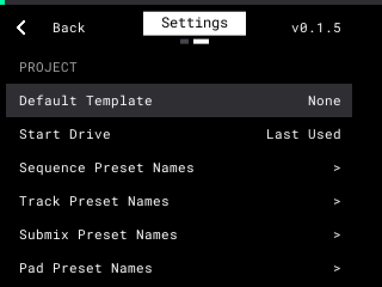
- SHIFT を押したまま PAD 8 – MIDI CONFIG を押します。
- B2 を押して Settings に移動します。Shortcuts > Shift+Pad 8 が Settings の場合は、この手順は不要です。
- ENCODER を回して行を選択します。
- ENCODER を押し（行が青くなります）、回して値を変更し、もう一度押して確定します。> が付いた行は、リストが開きます。
- B1（Back）または B2 を押すと MIDI Config に戻ります。
Mod は設定を SD カード（mpcqol.conf）に保存します。
| グループ | 設定 | 内容 | 値 |
|---|---|---|---|
| PROJECT | Default Template | New Project が読み込めるプロジェクト。テンプレートを使った New Project を参照。 | None（デフォルト）、プロジェクト |
| PROJECT | Start Drive | Load Project のドライブ、および起動後最初の Save Project フォルダページのドライブ。Last Used = 標準と同じ。 | Internal、External、Last Used（デフォルト） |
| PROJECT | Sequence Preset Names、Track Preset Names、Submix Preset Names、Pad Preset Names | 名前を変更するときの Preset リストに表示される名前。 | On（デフォルト）、各名前ごとに Off |
| SAMPLE BROWSER | Start Drive | Sample Select のドライブ、および起動後最初の Save Sample フォルダページのドライブ。Last Used = 標準と同じ。 | Internal、External、Last Used（デフォルト） |
| SAMPLE BROWSER | Sample Select Opens | Sample Select が開く場所。Last Used = SAMPLE BROWSER の Start Drive。 | Last Used（デフォルト）、Home Folder |
| SAMPLE BROWSER | Home Folder | Home Folder を参照。 | None（デフォルト）、フォルダ |
| SAMPLE BROWSER | Sample Select Pads Play | Sample Select でパッドが行う動作（そこでは SHIFT + K2 でも切り替え可）。Sample Select でのプレビューを参照。 | Preview（デフォルト）、Own Sample |
| SAMPLE BROWSER | Fader Scrolls List | On: SAMPLE SELECT と Load Project で FADER がリストをスクロールします。Off: 標準と同じ。 | Off、On（デフォルト） |
| SAMPLE | Snap to Zero Crossing | Stock: ズームアウト時のトリムのみがゼロクロスにスナップします。Always: チョップやスライスも、すべてのズームでスナップします。 | Stock（デフォルト）、Always |
| SAMPLE | Link Slices Default | 個別の選択をしていない各パッドの Link Slices。チョップモードを参照。 | Off、On（デフォルト） |
| SAMPLE | Ask Before Rechop | K3 で新しいスライスを作る前に、チョップモードが確認するタイミング。After Edits: 自分でスライスを編集した後のみ。Always: タイプが Manual のときは毎回。 | After Edits（デフォルト）、Always |
| SAMPLE | Threshold Max Slices | チョップタイプ Threshold のスライス数の上限。スライス数を減らすと、短いサンプルでもマーカーが離れた状態を保てます。チョップモードを参照。 | 16（デフォルト）、32、64、128 |
| SAMPLE | Ask Before Erase Pad | On: シーケンス停止中に ERASE + サンプルのあるパッドを押すと「Erase Pad A01?」と確認します（B1 = Cancel、B3 = Do It!）。確認中はパッドは何もしません。シーケンス再生中は、標準と同じく ERASE + パッドでそのパッドのノートを消去します。UNDO でクリアしたパッドを元に戻せます。 | Off（デフォルト）、On |
| SAMPLE | Pad EQ | On: EQ ページが表示され、EQ が聞こえます。Off: 標準と同じ。EQ の値はプロジェクトに残ります。 | Off、On（デフォルト） |
| SAMPLE | Sample Screen Name | SAMPLE 画面に表示される名前。 | Pad（デフォルト）、Track、Sequence |
| SAMPLE | MIDI Keyboard Plays | 個別の KEYS ルートを持たないパッドの場合。Selected Pad: キーボードで選択中のパッドを半音階で演奏します。All Pads: 標準と同じ。 | All Pads、Selected Pad（デフォルト） |
| SAMPLE | MIDI Keys on Chop Pad | 2 つ以上のスライスを持つパッドでの MIDI キーボード: キーごとに 1 スライス、またはパッドを半音階で演奏。 | Slices（デフォルト）、Pitch |
| SEQUENCE | Track View Labels | トラックビューの行ラベル: トラック番号または名前。 | T01（デフォルト）、Name |
| SEQUENCE | Track View Rows | トラックビューに表示するトラック数。 | 8（デフォルト）、6、4 |
| SEQUENCE | Pad View Rows | パッドビューに表示するパッド数。 | 8（デフォルト）、4 |
| SEQUENCE | Pad View Grid | パッドビューで Steps をオンにしたときのステップサイズ。 | 1/8、1/16（デフォルト）、1/32 |
| SEQUENCE | Position Shows | Step Edit の最上段に表示される位置。Playhead: シーケンス再生中はプレイヘッド、それ以外はカーソル。 | Playhead（デフォルト）、Cursor |
| SEQUENCE | Triplet Grids | Hide: グリッドリスト（パッドビューのズーム、SEQ 画面の K2、Rec Quantize ポップアップ）に T 値を表示しません。 | Show（デフォルト）、Hide |
| SEQUENCE | Count-In at Start | MPC 起動時のカウントイン。SHIFT + PAD 4 で次の起動まで変更できます。 | On（デフォルト）、Off |
| SEQUENCE | Track Grid on Screen | トラックのセレクトグリッド。 | Toggle（デフォルト）、On、Off |
| SEQUENCE | Seq Grid on Screen | シーケンスのセレクトグリッド。 | Toggle（デフォルト）、On、Off |
| SEQUENCE | Mute Type | パッドミュートやトラックミュートの鳴り方。Audio: 音がすぐに止まります（トラックは 5 ms でフェードアウト）。Event: 新しいノートは鳴らず、鳴っているノートは最後まで再生されます。ミュートの録音を参照。 | Audio（デフォルト）、Event |
| SEQUENCE | Song Pads | Song モードでパッドが行う動作。ソングのクリアを参照。 | Stock（デフォルト）、Quick Add |
| FX & AUTOMATION | Knob FX List > | Knob FX List と Insert FX List を参照。 | 各エフェクトごとに On または Off（デフォルト: すべて On） |
| FX & AUTOMATION | Insert FX List > | Knob FX List と Insert FX List を参照。 | 各エフェクトごとに On または Off（デフォルト: すべて On） |
| FX & AUTOMATION | FX Categories | On: Insert FX リストがエフェクトを 6 つのカテゴリーに分けて表示します。Off: 1 本の長いリスト。 | On（デフォルト）、Off |
| FX & AUTOMATION | Erase All Starts | ERASE AUTOMATION ウィンドウを開いたときに All がオンになっているかどうか。 | On、Off（デフォルト）、Last Used |
| FX & AUTOMATION | Mixer Opens On | ミキサーの最初のページ。 | Pad inserts、Ch. Mixer、Last Used（デフォルト） |
| SYSTEM | Shortcuts > | ショートカットを参照。 | ショートカットを参照 |
| SYSTEM | CPU/RAM Monitor | CPU と RAM の使用量を示すバー。Warn Only: CPU や RAM が高いとき、または音切れのときのみ表示。 | Off（デフォルト）、On、Warn Only |
| SYSTEM | Show Knob Values | Stock: ノブはラベルを表示し、回したときだけ短時間その値を表示します。ミキサーの Out（K3）とグループ（K2）、Mother Ducker の Bus（K1）は常に値を表示します。Always: すべてのノブが常にラベルと値を表示し、必要に応じて短いラベル（「Freq」「Semi」）を使います。 | Stock（デフォルト）、Always |
| SYSTEM | Screen Brightness | ディスプレイの最大輝度。 | 13%、25%、50%、100%（デフォルト） |
| SYSTEM | Pad Brightness | パッドライトの明るさ（ボタンは対象外）。 | 25%、50%、75%、100%（デフォルト） |
#ショートカット
SHIFT + パッド、SHIFT + SAMPLE、PAD FX、SHIFT + PAD FX に別の機能を割り当てられます。SHIFT + パッド、SHIFT + SAMPLE、PAD FX は、同じ画面リストから選びます。
Settings で Shortcuts（グループ SYSTEM）を選択します。ENCODER を押し、各ボタンを Settings の行として変更します。
| ボタン | デフォルト | その他の機能 |
|---|---|---|
| Shift+Pad 1–6、Shift+Pad 12–15 | Stock | View Follow、Count-In、Pad View、Mixer、Off、Input Config、Pad FX、Tuner |
| Shift+Pad 4 | Count-In（標準） | View Follow、Pad View、Mixer、Off、Input Config、Pad FX、Tuner |
| Shift+Pad 7 | Tuner | Stock（Double Speed）、View Follow、Count-In、Pad View、Mixer、Off、Input Config、Pad FX |
| Shift+Pad 8 | MIDI Config | Settings |
| Shift+Sample | Pad View | Input Config（標準）、Mixer、Off、Pad FX |
| PAD FX | Mixer | Pad FX（標準）、Pad View、Input Config |
| Shift+PAD FX | Flex Beat（標準） | Pad FX |
Stock = そのパッドの標準機能。Off = そのボタンは何もしません。Settings = SHIFT + PAD 8 で Settings がすぐに開きます（B1 または B2 で MIDI Config へ）。View Follow は後述します。その他の機能は、それぞれの画面を開きます: 標準の COUNT-IN、パッドビュー、ミキサー、標準の Input Config メニュー、標準の Pad FX 画面、チューナー。
ヒント: Pad View を Shift+Sample から、または Mixer を PAD FX から外す場合は、Shift+Pad のどれかに割り当てておくと、すぐ呼び出せます。
ヒント: デフォルトでは SHIFT + PAD FX で Flex Beat が開き、標準の Pad FX 画面はそこでの B2 にあります。Shift+PAD FX = Pad FX にすると、SHIFT + PAD FX で標準の Pad FX 画面がすぐに開き、Flex Beat はその画面の B2 になります。
ヒント: 複数のパッドに同じ機能を割り当てられます。新しい機能を割り当てたパッドは、標準の機能を失います。例: Shift+Pad 5 = Mixer にすると、ミキサー内でマスターの Color Comp. を開けます（Master、Edit）。
ヒント: SHIFT + PAD 9、10、11、16 は常に標準の機能を保持します。Mod はそれらの画面に独自の機能を追加します。
View Follow
View Follow は、シーケンス再生中にパッドビューとトラックビューが何を追従するかを設定します。Follow Playhead（ビューがプレイヘッドと一緒にスクロールし、カーソルは動かない）または Follow Cursor（ビューはカーソルの位置に留まる）です。Shift+Pad を View Follow に設定します。SHIFT + そのパッドを押すたびに、もう一方の値に切り替わり、ポップアップが表示されます。
ヒント: ENCODER を回すか - または + を押すと、次にシーケンスを開始するまで Follow Playhead が止まります。MPC は再起動後も選択を記憶します。
#サンプルモード
#SAMPLE 画面のヘッダー
SAMPLE 画面には、パッドの前にシーケンスとトラックが表示されます。例: 「S01 T02 A01」（T03+ = 新しいトラック）。
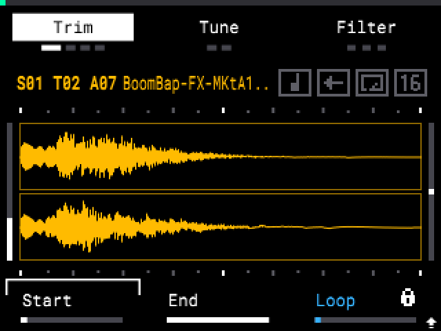
- SEQ または PAD BANK を押している間は、S01 または T01 が赤くなり、名前欄には（これから選ばれる）シーケンスまたはトラックが表示されます。
- 選択したシーケンスがループの終わりを待っている間は、S01 が赤くなり、名前欄に 「Next」 とその名前が表示されます。
- SAMPLE を押している間は A01 が赤くなります。SAMPLE + パッドで、音を出さずにそのパッドを選択します（標準）。
#EQ ページ
各パッドには、フィルターの直後に 3 バンド EQ があります。0 dB のときは音を変えず、余分な CPU も使いません。
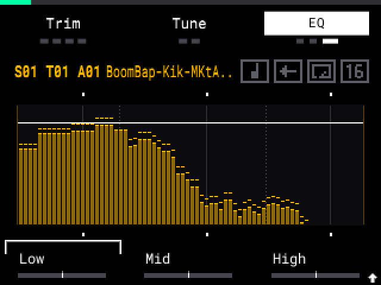
- SAMPLE を押してパッドを選択します。
- EQ ページが表示されるまで B3 を押します（Filter > Flt Env > EQ）。
- ノブを回します。
- K1 = Low、K2 = Mid、K3 = High。
- 左いっぱい = そのバンドはオフ（キル）。中央 = 0 dB。右いっぱい = +6 dB。
- クロスオーバーポイント:
- SHIFT + K1 = Low/Mid のクロスオーバー（40 Hz – 1 kHz）。
- SHIFT + K3 = Mid/High のクロスオーバー（600 Hz – 15 kHz）。
- SHIFT + K2 = 2 つのクロスオーバーを同時に動かします。
ウィンドウには、パッドのリアルタイムスペクトラム（EQ 後）と EQ カーブが表示されます。ENCODER については、SampQOL 画面でのノブを参照してください。
- オートメーション: SEQ RECORD と PLAY 中に K1〜K3 を回します。
- オートメーションの消去: EQ ページで ERASE を押したまま K1、K2、K3 を回します。SHIFT を押すとクロスオーバーを消去します。
- プロジェクトは各パッドの EQ 値を保存します。
- バイパス: EQ ページで SHIFT + B3: すべてのパッドが EQ なしで再生され、ノブがグレーで表示されます。もう一度押すと EQ が聞こえます。EQ ページを離れるとバイパスはオフになります。プロジェクトには保存されません。
- ミキサー: PAD FX でパッドのインサートに移動します。EQ 行の B3 で戻ります。ミキサーを参照。
ヒント: EQ は、SampQOL OS を入れた MPC Sample でのみ再生されます。どの MPC でも再生される EQ が必要な場合は、ミキサーで EQ エフェクトをパッドのインサートとして挿してください。
#サンプルテイル
Tail を使うと、サンプル（またはチョップ）の終わりが長く響きます。最後の部分が前後に再生され（ピンポン）、フェードアウトするため、チョップが突然途切れません。
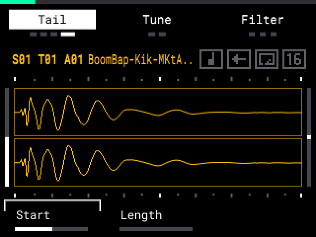
- SAMPLE を押してパッドを選択します。
- Tail ページが表示されるまで B1 を押します（Trim > Mix > Amp Env > Tail）。
- ノブを回します。
- K1 = Start: 前後に再生される部分の大きさ（4 ms〜1 秒）。波形に青い線で表示されます。
- K2 = Length: テイルが響く長さ（4 ms〜5 秒）。左いっぱい = Off（デフォルト）。
パッドの Tail オートメーションを消去するには、ERASE を押したまま K1 または K2 を回します。
- Loop がオンのときは Tail は動作しません。
- テイルが再生されている間、パッドライトは明るいままです。
- チョップモードでは、Tail は選択中のチョップに対して働きます。
- プロジェクトは Tail の値を保存します。
#ステレオ: ステレオサンプルの片チャンネル
Stereo を使うと、ステレオサンプルを左チャンネルのみ、右チャンネルのみ、またはそのブレンドで再生できます。チャンネルはモノラルで、両方のスピーカーから再生されます。
- SAMPLE を押してパッドを選択します。
- Play ページが表示されるまで B2 を押します。
- SHIFT を押しながら K3（Stereo）を回します。
- St（中央、デフォルト）: サンプルを標準どおりステレオで再生します。
- L Mono（左いっぱい）: 左チャンネルのみを両方のスピーカーから再生します。
- R Mono（右いっぱい）: 右チャンネルのみを両方のスピーカーから再生します。
- L1〜L49、R1〜R49: ブレンド。もう一方のスピーカーでは、残したチャンネルがより多く再生されます。数字が大きいほど、よりモノラルに近づきます。
K3 は、ほかの SampQOL のノブと同様に MIDI Config > Parameter Takeover に従います（SampQOL 画面でのノブを参照）。
- モノラルのサンプルは変化しません。
- プロジェクトは各パッドの Stereo 値を保存します。
- SEQ RECORD + PLAY 中にノブを回しても、オートメーションは録音されません。
ヒント: 同じステレオサンプルを 2 つのパッドに割り当て、それぞれ L Mono と R Mono にすると、各パッドが片側をそれぞれ独立したモノラルの音として再生します。
ヒント: 左右を 1 つのモノラルの音にまとめたい場合は、Stereo を St のままにして、パッドのインサートスロットに AIR Stereo Width を入れ、Width を 0 % にします。
ヒント: 標準の MPC Sample や MPC One、Live、X では、パッドは両チャンネルを再生します。結果をサンプルとして残したい場合は、先に1 つのパッドのリサンプルを使ってください。
#16 LEVELS スケール
Scale を使うと、16 個のパッドが 1 つのパッドのサンプルを、スケールの音階で演奏します。各パッドでコードを鳴らしたり、アルペジオ（Arp）を演奏したりすることもできます。
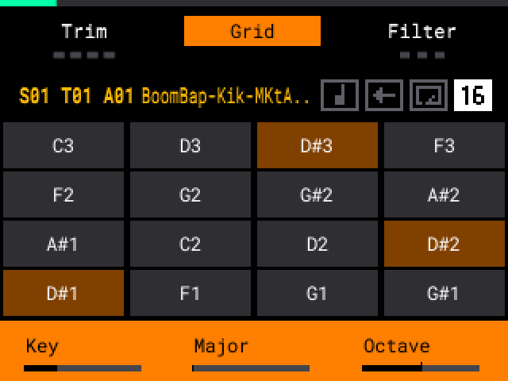
- SAMPLE を押してパッドを選択します。
- 16 LEVELS を押して 16 Levels をオンにします。
- ディスプレイに 「16 Level / Scale」 と表示されるまで SHIFT + 16 LEVELS を押します（Velocity > Filter > Tune > Scale。もう一度押すと Velocity に戻ります）。
- オレンジ色のバー上のノブを回します。
- K1 = Key（C〜B）。
- K2 = Scale: Chromatic、Major、Minor、Harm Minor、Maj Pent、Min Pent、Dorian、Phrygian、Mixolydian、Blues。
- K3 = Octave（-2〜+2）。
- ENCODER: SampQOL 画面でのノブを参照。
- パッド（オレンジ色）を演奏します。PAD 1 がキーの音で、その上のパッドはスケールを上がっていきます。例: Key C、Major の場合、PAD 1〜PAD 8 は C、D、E、F、G、A、B、C を演奏します。
キーは最も近い音程で再生されます（最大で 5 半音上、または 6 半音下）。それ以上は Octave を使います。Scale はパッドの KEYS ルート音を基準にします（例: 「Key C (D3)」）。KEYS ルートが Off の場合、サンプルは C として扱われます。
Chord: SHIFT を押しながら K1 を回します: Chord Off、1-3-5、1-3-5-7、1-3-5-6、1-3-5-9、1-3-5-7-9、1-2-5、1-4-5、1-5、1-5-8。数字はスケールの度数です（8 = 1 オクターブ上）。Chromatic では、各パッドが Major のコード形を演奏します（1-3-5 = メジャー、1-4-5 = sus4）。Note On モードのパッドでは、録音された各音がそれぞれの長さで再生されます。
Arp: SHIFT を押しながら K2 を回してパターンを選択します: Arp Off、Up、Down、Up & Down、Converge、Diverge、Thumb Up、Pinky Up、Random。SHIFT + K3 でオクターブ数（1〜4）を設定します。
NOTE REPEAT を押しながらパッドを押し続けると、リピートは押しているパッドのノート（Chord の場合はコードの全構成音）を、パターンに従って低い音から高い音へ 1 音ずつ演奏します。2 つのコードで共通する音は 1 回だけ鳴ります。レート、スウィング、録音は標準の Note Repeat と同じです。
ヒント: Chord Off の場合、1 つのパッドはどのステップでも同じ音を鳴らします。2 つ以上のパッドを押し続けるか、Chord を設定してください。
パッドグリッド: B2（Grid）で、各パッドの音（例: E3）とコード名（例: Em7）が表示された 4×4 グリッドの表示／非表示を切り替えます。キーを鳴らすパッドはオレンジ色です。グリッドがオフのときは、ノブを回した後 2 秒間表示されます。
- SHIFT を押している間は、バーに Chord と Arp の値が表示されます。SHIFT + パッドは常に標準機能です。
- Mod は Scale の値をプロジェクトではなく SD カードに保存します。
- 録音は通常の 16 Levels ノートになります。プロジェクトは標準の MPC でも開けます。
- 録音したコードは、Time Correct（SHIFT + PAD 14）を使ってもすべての音が保持されます。最初の音がグリッド上に置かれ、以降の音は 1 ティック（1 拍の 1/960）ずつ後ろにずれます。標準では 1 音しか保持されません。これは Tune を含むすべての 16 Levels ノートに当てはまります。
ヒント: コードを聞くには、パッドを Poly（Play ページ、K1）に設定してください。Mono モードのパッドは 1 音しか鳴りません。
注意: Pitch モードで Warp がオンのときは、Scale は動作しません（標準の Tune と同じ）。Warp を Off または Time stretch に設定してください（SHIFT + PAD 15）。
2 つのパッド: 標準と同じく、2 つ目のパッドが 1 つ目を止めます。2 つ目のパッドは、離すまで再生されます。
#KEYS: MIDI キーボードでパッドを演奏する
KEYS を使うと、MIDI キーボードで選択中のパッドを半音階で演奏できます。パッドはドラムのままで、キーボードがサンプルを音程付きで演奏します。
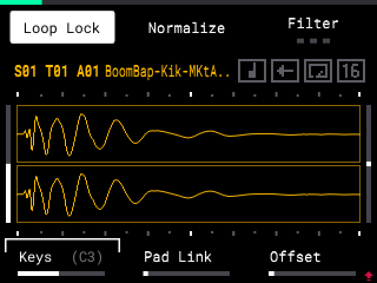
キーボードの接続:
- MIDI 出力のあるキーボードを、1/8"（3.5 mm）TRS – 5 ピン MIDI DIN ケーブル（付属しません）で MIDI IN に接続します。USB のみのキーボードの場合: USB MIDI ホストボックス（付属しません）を MIDI IN に接続するか、USB-C 経由で MIDI を MPC に送るコンピューターを使います。
- MIDI Config（SHIFT + PAD 8）で、MIDI Port を External（MIDI IN）または USB（コンピューター）に、Pad MIDI In を On に設定します。
ヒント: キーボードを USB-C に直接接続しても動作しません。MPC は USB ホストではなく USB デバイスだからです。MIDI Port の設定が間違っていると、キーボードを弾いても音が出ません。
演奏: SAMPLE を押し、パッドを選択して（SAMPLE + パッド: 音は出ません）キーボードを弾きます。C3 でサンプルが元の音程で再生されます。コード、キーごとのリリース、サステインペダルも動作します。
パッドのルート音を変更する:
- SAMPLE を押し、Play ページが表示されるまで B2 を押します。
- SHIFT を押しながら K1（Keys）を回します: 1 ステップ = 1 半音。
- C#-2 より下は Off: キーボードは標準どおりパッドを演奏します。
- Off のさらに下は Default: パッドは Settings > MIDI Keyboard Plays に従います。値はかっこ内に表示されます（例: 「(C3)」）。
プロジェクトは各パッドのルート音を保存します。
ヒント: チューナーを使うと、パッドや楽器が鳴らした音からルート音を設定できます。
チョップしたパッド: 2 つ以上のスライスを持つパッドでは、ルート音から上の各キーが、元の音程で 1 つのスライス（1、2、…）を演奏します。パッド全体を半音階で演奏するには、Settings > MIDI Keys on Chop Pad を Pitch に設定します。
NOTE REPEAT: キーを押し続けます。選択中のパッドが、そのキーの音程でリピートします。
録音: SEQ RECORD をオンにして演奏します。MPC は通常の 16 Levels ノート（Tune、チョップしたパッドでは Slice）を録音するため、プロジェクトは標準の MPC でも開けます。録音したコードは 16 LEVELS スケールと同じように動作します。
ヒント: 標準と同様に、Step Edit ではキーを弾いてもノートは追加されません。そこではパッドを使ってください。
#チョップモード
128 スライス: チョップモードでは、1 つのサンプルに最大 128 のスライスを作れます。PAD BANK でバンクを選択します（A = スライス 1〜16 から H = 113〜128 まで）。ERASE + パッドは各バンクで動作します。チョップのないバンクでは、チョップモードはバンク A で開きます。
タップでチョップ: チョップタイプ Manual で、パッド 1 をタップしてサンプルを再生し、それに合わせてパッド 2〜16 をタップします。タップするたびにチョップが作られます。バンクの 16 個目のチョップの後は次のバンクが表示されるので、そのパッド 1 をタップして続けます。
ヒント: 2 つのチョップの間にチョップを入れても、バンクは変わりません。サンプル再生中に PAD BANK を押すと次のバンクに移動します。128 個目のチョップの後は、バンクは変わりません。
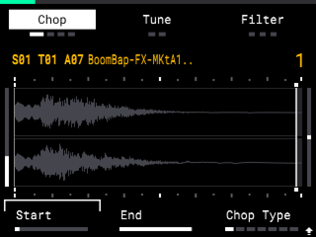
Threshold と Split: チョップタイプ Threshold は、標準と同じく最大 16 スライス（バンク A）を作ります。Settings > Threshold Max Slices で最大 128 まで設定できます。最初のスライスはサンプルの先頭から作られます。Threshold を下げるとスライスが増えます。Split（SHIFT + B2）は最大 64 スライスまで分割します。
Regions 32、64、128: K3（Chop Type）には 8 つの位置があります: Threshold、Regions 4、8、16、32、64、128、Manual。K3 またはエンコーダーを回すと、ノブにタイプの名前が表示されます。
チョップモードを離れる、またはチョップモード内で別のトラックに移動すると、Threshold や Regions のチョップは Manual になります（Extract で作られるパッドと同様）。スライスはそのまま残ります。もう一度チョップするには、K3 を Threshold または Regions に回します。
注意: 標準の MPC Sample ソフトウェアは、Threshold や Regions のパッドを再度チョップし、16 スライスしか保持しません。Manual のパッドは、Mod のないデバイスでもすべてのスライスを保持します。
ヒント: 新しいチョップやスライスの移動をした後、チョップモードを離れるときに MPC がチョップをサンプルファイルに保存します。長いサンプルでは、波形が戻るまで数秒間ロード中のサークルが表示されます。変更がない場合、波形はすぐに表示されます。
ヒント: 64 スライス以上では、Split は白いままですが分割しません。先に Merge を使うか、スライスを手動で追加してください。
Link Slices: Link Slices がオンのとき、スライスの終わりを動かすと次のスライスの始まりも一緒に動きます。このパッドについて設定するには、SHIFT を押しながら K3（Link: On / Link: Off）を回します。プロジェクトは各パッドの選択を保存します。個別の選択をしていないパッドは Settings > Link Slices Default に従います。チョップタイプが Threshold のときは、SHIFT + K3 は標準の Threshold のままです。
再チョップ前の確認: 新しい Chop Type（K3）があなたの作ったスライスを置き換える前に、MPC は 「CHANGE CHOP TYPE」 と確認します: B1 = Cancel、B3 = Do It!。Settings > Ask Before Rechop を参照してください。
ゼロクロス: Settings > Snap to Zero Crossing = Always にすると、Start、End、Loop、チョップ、スライスがすべてのズームでゼロクロスにスナップし、クリックノイズが減ります。
Extract は、パッドのチョップをそれぞれ独自のパッドに配置します。新しい WAV は作りません。新しい各パッドは、チョップしたパッドのコピーで、そのチョップが Start と End になります。標準の Extract（チョップごとに新しい WAV を作る）は使えません。
- SAMPLE を押し、チョップしたパッドを選択して Chop Mode を開きます。
- スライスを選択します。
- SHIFT を押しながら B1（Extract）を押します。
- B1 = Cancel。
- B2 = Pad: 選択したスライスを 1 つのパッドに配置します。
- B3 = Track: 各チョップを順番に、1 列にそれぞれのパッドへ配置します。
- チョップ用のパッド（Pad）、または最初のチョップ用のパッド（Track）を押します。PAD BANK を短く押すと次のバンクを選択します。PAD BANK を押しながらパッドを押すと、そのバンクを選択します。ディスプレイにはパッド（例: 「16 chops to B01-B16」）と、それらが空かどうかが表示されます。開始時には、最初の空きパッド（またはパッドの列）が選択されます。なければ、チョップが収まる最後のパッドが選択されます（128 チョップの場合: 常に A01）。パッドライトはバンク内のパッドを示します: 黄 = チョップがそこに入る、赤 = チョップがそこのサンプルを置き換える、白 = チョップしたパッド。K2（Mute Grp）または ENCODER を回して、チョップパッドのミュートグループを設定します: Off または 1〜32（ENCODER 1 ステップにつき 1 グループ）。開始時には、チョップしたパッドのミュートグループになっています。Back は設定した値を保持します。ミュートグループ内では、パッドは同じグループのほかのパッドを止めるため、チョップは直前のチョップを止めます。ミュートグループを参照。
- ボタンを押します。
- すべてのパッドが空の場合は B3 = Do It!。邪魔になるパッドにサンプルがある場合は、B3 = Replace: チョップがそれらのパッドのサンプルを置き換えます。Track の場合、チョップしたパッド自身も対象になることがあります。その場合、そのパッドは自身のチョップになり、そのチョップが Start と End になります。
- B2 = New Track（Track のみ）: チョップは、現在のトラックの直後に作られる新しいトラックの A01 以降のパッドに入ります。MPC は新しいトラックをバンク A で表示し、パッド A01（最初のチョップ）が選択されます。
- B1 = Back: 手順 3 に戻ります。
- チョップしたパッドにパッドインサートエフェクトがある場合、New Track は最初に確認します。B3（To Track）は、同じ設定とオン／オフの状態のまま、エフェクトを新しいトラックのトラックインサートに 1 つだけ配置します（チョップパッドにはエフェクトが付きません）。B2（Copy FX）は、各チョップパッドにコピーを付けます。B1（Back）は手順 4 に戻ります。チョップしたパッドはエフェクトを保持します。
- ディスプレイに 「Extracted to:」 とパッドが表示されます。
- 1 回の UNDO で、新しいトラックを含め Extract 全体が取り消されます。
- Pad では、チョップしたパッドは置き換えられません。Track と Replace では、チョップしたパッドはサンプルを保持しますが、自身のチョップだけを再生します。UNDO で、すべてのチョップを持つ元のパッドに戻ります。
- 自身のチョップだけを再生するパッドで SHIFT + B1 を押すと、「Extract: 1 chop」 と表示されます。UNDO ですべてのチョップが戻ります。
- チョップが H16 を超える場合、ディスプレイに 「they do not fit」 と表示され、B3 は使えません。より前のパッドを押すか、New Track を使ってください。
- 128 チョップはトラックのすべてのパッドを埋めるため、New Track を使ってください。
- トラックが 16 個ある場合、New Track は 「16 Tracks Max」 と表示します。
- Extract はシーケンスが停止しているときのみ動作します。ノートは変更されません。
#サンプルレコードモード
標準の Input Config メニューのすべての設定は、SAMPLE RECORD 画面にあります。SHIFT + SAMPLE のメニュー自体については、ショートカットを参照してください。
SHIFT + B2 で Rec Input Effects（ラベル Input FX）のオン／オフを切り替えます。オン: Knob FX が録音に含まれます。入力モニターもそれに従います: Input FX Off ではドライ、Input FX On では Knob FX が 1 回かかった音になります。
標準では、モニターは常に Knob FX を通ります。Monitor（Off、Auto、On）を変更してもクリックノイズは出ません。モニターは MAIN VOLUME に従います。
Undo と Redo（SHIFT + - / +）は SAMPLE RECORD でも動作します。録音中は、MPC に Stop the recording first. と表示されます。
#To Seq: シーケンスに直接録音する
To Seq を使うと、MPC は新しいサンプルのノートをシーケンスに追加します。
- SAMPLE RECORD を押します。
- B2 を押して To Seq をオンにします（白いボックス = オン）。
- K2 で録音の長さを選択します。
- Seq: ループの先頭から 1 ループ分。ノートは 1 拍目に置かれます。
- Free: 録音は即座に始まり、もう一度パッドをタップすると止まります。ノートは開始した時点に置かれます。
- 録音したいパッドをタップします。録音後、ノートがシーケンスに入り、パッドはすぐに再生されます。
- シーケンス停止中: パッドをタップすると、シーケンスと録音が 1 小節目の 1 拍目から始まります（COUNT-IN がオンの場合は 1 小節後）。カウントイン中に STOP を押すと、録音は行われません。
- 同じパッドに再度録音する: 新しいテイクがそのパッドの古いノートを置き換えます。オートメーションは残ります。レイヤーを追加するには、別のパッドを使います。
- テイクを取り消す（Looper のテイクも同様）: Undo を 1 回（To Seq A01）。パッドの古いノートと古いサンプルが戻ります。
ヒント: To Seq は 4/4 と 3/4 拍子でのみテストされています。
#ルーパー
Looper は、同じループを複数回重ねて録音します。停止すると、MPC はすべてのパスを 1 つのループに重ねてまとめます。
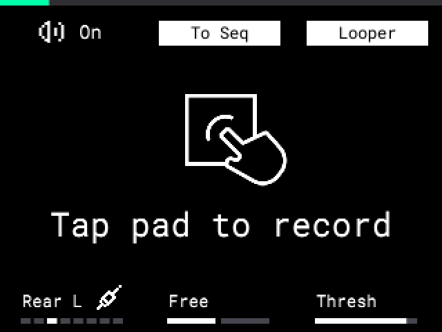
- SAMPLE RECORD を押し、To Seq をオンにします（B2）。
- B3 を押して Looper をオンにします（白いボックス = オン）。
- K2 を Free に設定します。
- パッドをタップし、好きなだけパスを演奏します。
- もう一度パッドをタップして停止します。
- 合計が大きすぎる場合、音がクリップします。
- チョップしたパッドでは、標準と同じく Looper はパスをまとめません。
- To Seq をオフにすると、Looper もオフになります。
#STOP で画面が切り替わらない
STOP はシーケンスを止めますが、ディスプレイは次のテイクに備えて SAMPLE RECORD に留まります。待機中の録音（「Waiting for signal」）はキャンセルされます。
#ソース Rear+USB
ソースを Rear+USB にすると、MPC はリア入力とコンピューターからの USB オーディオを同時に録音し、モニターします。
- SAMPLE RECORD を押します。
- K1（Source）を右いっぱいに回して Rear+USB にします。（標準の Input Config メニューとチューナーでも、最後の Source です。）
- 通常どおり録音します。
- MPC は 2 つの入力をフルレベルで加算します。両方が同時に大きいと録音がクリップすることがあるので、どちらかを下げてください。
- SD カードがない場合、MPC はソース Rear の標準状態で起動します。
#チューナー
チューナーは 1 つの音の音名を表示します: マイクに入れたギターや声、リア入力や USB オーディオ、または MPC が再生しているサンプルです。
- SHIFT + PAD 7 を押します。チューナーが開きます。（標準ではこれは Double Speed です。ショートカットを参照。）
- K1（Src）または ENCODER を回して Source を選択します: Mic、Rear、Rear+USB（チューナーが読み取るのはリア入力のみ）、USB（コンピューター）、Resample（MPC が再生しているもの。MAIN VOLUME が 0 でも可）。これは録音時の Source と同じものです。
- 1 つの音を弾きます。画面に音名（例: A3）、-50〜+50 セントの針、周波数とセントが表示されます。針は 3 セント以内で緑色になります。音が止まると、最後の音名がグレーで残ります。
- B1（Back）、SHIFT + PAD 7、またはモードボタンを押すとチューナーを閉じます。
音名は、KEYS や 16 Levels と同じ MPC のオクターブ表記を使います: C3 が MIDI ノート 60 なので、440 Hz は A3 と表示されます（ギターチューナーでは A4）。
ヒント: 一度に 1 つの音を弾いてください。コードやドラムヒットでは、安定した音名が表示されないことがよくあります。低いギターやベースの弦は、特に音の出だしで 1 オクターブ高く表示されることがあります。
音からパッドのルート音を設定する:
- SAMPLE 画面または Pad View でパッドを選択します。チューナーを開いている間に演奏したパッドも、選択中のパッドになります。
- チューナーを開きます。最下行に、ルート音を受け取るパッドが表示されます（例: 「Pad T02 A05」）。
- 音を鳴らします。
- ソースが Resample の場合: パッドを演奏します。チューナーはサンプル自体を読み取ります。
- ほかのソース（例: Rear）の場合: サンプルの音を、もう一度楽器で弾きます。例: Sample Record でギターの A を録音した場合は、同じ A をもう一度弾きます。
- B3（Apply）を押します。その音が、選択中のパッドの KEYS ルート音になります。3 秒間、最下行に新旧のルート音が表示されます（例: 「Pad T02 A05: root A3 (was C3)」）。Apply には Undo ステップがありません。元に戻すには、SAMPLE の Play ページで SHIFT + K1 を使います。
ヒント: Resample は常にサンプルの音名を返します。ほかのソースでは、サンプルと同じ音を弾いてください。コードやリフの場合は Resample を使います。
#シーケンスとトラック
1 つのプロジェクトには、最大 16 個のドラムトラックを持てます。SampQOL OS は、MPC One、Live、X で作られたものも含め、プロジェクトのすべてのドラムトラックを読み込みます。MPC One や Live と同様に、パッドは現在のトラックを演奏します。各トラックには独自の 8 つのパッドバンクがあります。録音、NOTE REPEAT、MIDI キーボード、Resample は現在のトラックを使います。
Mod は常に、トラック 1 を現在のトラックとしてプロジェクトを保存します。これにより、標準の MPC Sample でも安全に開けます。
Load Kit: Load Kit はキットを現在のトラックに読み込みます。ほかのトラックのサンプルはそのまま残ります。プロジェクト内のサンプルと同じ名前のキットのサンプルには、別の名前が付けられます（例: Kick1）。これにより、各トラックが自分の音を保持します。トラックにはキットの名前が付きます。
トラック名の一意化: プロジェクトは各トラックのノートをトラック名で保存します。そのため、Load Kit や Load Project で 2 つのトラックが同じ名前になった場合、2 つ目のトラックには別の名前が付けられます（例: Drum 001-2）。
Half Seq と Double Seq: SHIFT + パッド 2（Half Seq）と SHIFT + パッド 3（Double Seq）は、シーケンスのすべてのドラムトラックを変更します。
TAP TEMPO ライト: TAP TEMPO ライトはテンポに合わせて点滅しません。少し暗めに点灯したままになります。SHIFT を押している間は、標準と同じく SHIFT の色を表示します。
#トラックの選択
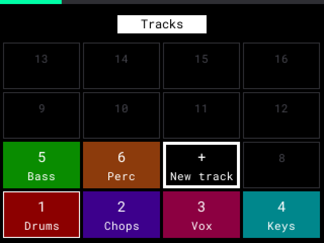
- PAD BANK を押しながら ENCODER を回します。PAD BANK を離すとトラックが変わります。
- または SHIFT + PAD BANK を押しながらパッド n を押すと、トラック n になります。押している間、パッドはトラックを表示します: 明るい緑 = 現在のトラック、暗い緑 = ほかのトラック、赤 = ミュートされたトラック、消灯 = トラックなし。ENCODER を回すと、対象のパッドが白くなります。
- ENCODER を 1 回回した後は、PAD BANK だけでもパッドにトラックが表示され、PAD BANK を離すまでパッド n でトラック n を選択できます。PAD BANK だけを押し続ける（ENCODER なし）と、パッド 1〜8 に標準のバンクの色が表示され、バンクを選択できます。
- 選択中は、トラック番号が赤くなります。トラックビューでは、トラックラベルが、これから選ばれるトラックに移動します。
新しいトラック: 最後のトラックの 1 つ先を選択します（例: T03+、トラックビューでは新しい行）。MPC は、空のパッド、空のトラックインサート、独自の色を持つ新しいトラックを 1 つ作ります。UNDO を 1 回押すと削除されます。
#トラックの移動
- 移動したいトラックを選択します。
- PAD BANK を押しながら -（1 つ上）または +（1 つ下）を押します。トラックは隣のトラックと入れ替わり、現在のトラックのままです。ポップアップに両方のトラックが表示されます（変更がない場合は 「First Track」 / 「Last Track」）。
これはすべての画面で動作します。移動のたびに UNDO のステップが 1 つ増えます。パッド、ノート、ミュート、名前はトラックと一緒に移動します。「Track n」という名前のトラックには、新しい位置の番号が付きます。自分で付けた名前は変わりません。
#パッドを別のトラックにコピーする
- コピー元のパッドを選択します。標準と同じく、SHIFT + ERASE（COPY）を押しながらコピー先のパッドを押します。
- COPY を押している間に ENCODER を回して、コピー先のトラックを選択します（例: 「Copy from A01 to Track 04 A02」）。
- 離します。MPC はコピー先のトラックに移動します。
コピーされるのはサンプルのみ（共有）で、ノートはコピーされません。コピー先のパッドにサンプルがある場合は、MPC が先に確認します（「COPY PAD」）。
#SAMPLE 画面からシーケンスを選択する
SEQ を押しながらパッド n を押すと、現在のパッドバンクのシーケンス n になります。SAMPLE 画面に留まります。シーケンスが再生中の場合は、ループの終わりで切り替わります。SEQ だけを押すと、標準と同じく SEQ 画面が開きます。
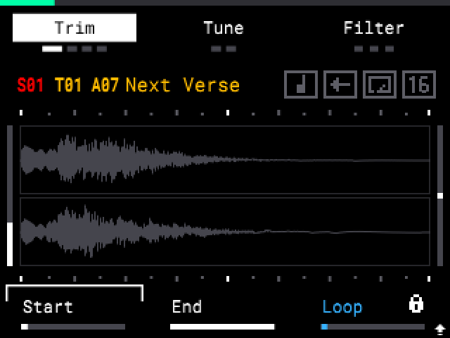
または SEQ を押しながら ENCODER を回し、SEQ を離します。これは Step Edit、すべてのミキサーページ、標準の Pad FX と Flex Beat 画面でも動作します。
SEQ を押している間、パッドにはパッドバンクのシーケンスが表示されます: 緑 = 現在、黄 = イベントあり、消灯 = 空、赤 = ループの終わりを待機中。
ヒント: Pad FX や Flex Beat 画面では、シーケンスを切り替えながら、パッドと KNOB FX でエフェクトを演奏できます。ライブパフォーマンス用の 1 つの画面です。
ヒント: MPC の再生中にシーケンスを切り替えると（Song モードでも）、短い途切れが聞こえることがあります。トラックやエフェクトが多いほど起こりやすくなります。
#セレクトグリッド
トラックまたはシーケンスを選択している間、ディスプレイにはパッド順（パッド 1 が左下）の 4x4 グリッドが表示され、各セルに番号と名前が入ります。
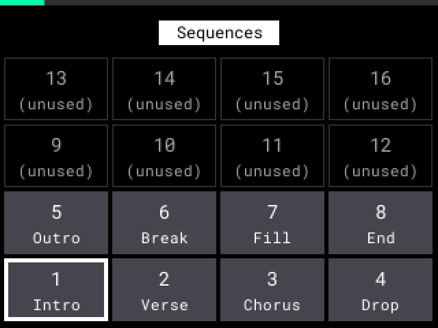
- トラック: SHIFT + PAD BANK を押し続けるか、PAD BANK を押しながら ENCODER を回します。PAD BANK を離すまで表示されます。
- シーケンス: SEQ を 0.3 秒間押し続けるか、SEQ を押しながら ENCODER を回します。これから選ばれるシーケンスのパッドバンクにある 16 個のシーケンスが表示されます。グリッドの後に SEQ を離しても、SEQ 画面は開きません。
- 太い白枠はこれから選ばれるトラックまたはシーケンス、細い白枠は現在のもの、太い赤枠はループの終わりを待っているシーケンスを示します。暗いセルは、ミュートされたトラックまたは未使用のシーケンスです。新しいトラックは「New track」とともに + で表示されます。
- Settings > Track Grid on Screen と Seq Grid on Screen を On、Off、Toggle のいずれかに設定します。Toggle では、B2 を押してグリッドのオン／オフを切り替えます（グリッドがオンのとき B2 は白）。MPC はこの選択を記憶します。
#シーケンスの名前付け
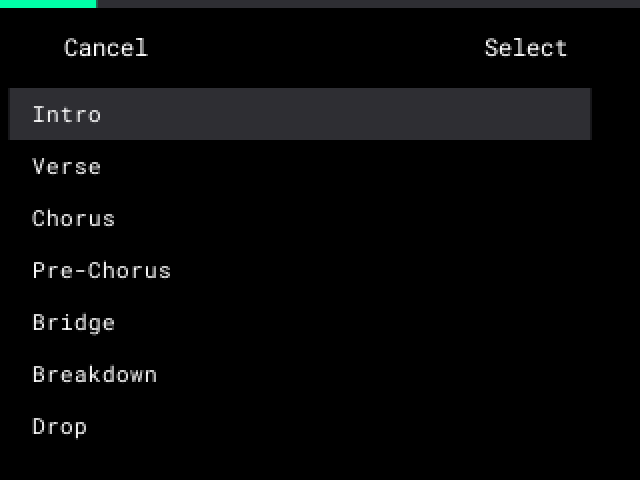
- SEQ 画面で SHIFT + B3（Rename）を押します。
- 標準と同じように名前を変更するか、SHIFT + B3（Preset）を押して名前を選択します: Intro、Verse、Chorus、Bridge、Drop、Outro など。
- B3（Do It!）を押します。UNDO も使えます。
標準と同じく、シーケンスは最初のイベントが入ったときに 「Sequence 08」 という名前が付きます。SEQ 画面では、「Seq A08」 の横に名前がグレーで表示されます。Song モードでは 「A01 Intro」、デフォルト名の場合は 「A01」 のみが表示されます。
SEQ モードでは、現在のシーケンスのパッドは緑、イベントのあるシーケンスは黄、空のシーケンスは消灯です。
#ソングのクリア
ソング内のすべてのシーケンスを一度に削除します。標準では、B2（Remove）は 1 行だけを削除します。
- SHIFT + PAD 12 を押して Song モードを開きます。
- SHIFT + B2（Clear All）を押します。ソングが空になります。UNDO で元に戻せます。
ヒント: 先にソングを停止してください。ソングの再生中、または空のときは、Clear All はグレーになります。
Quick Add: Settings > Song Pads = Quick Add にすると、パッドを押すだけで、B3 なしで選択中の行の直後にそのシーケンスが挿入されます。パッド 1、パッド 1、パッド 2 の順に押すと A01、A01、A02 になります。空のシーケンスのパッドも、B3 と同じように挿入されます（「(unused)」）。B2 または UNDO で削除できます。ソングの再生中は、パッドを押しても挿入されません。
ヒント: 各行には、再生されるテンポが表示されます。SEQ 画面で BPM: GBL をオンにすると、すべての行にグローバルテンポが表示されます。標準ではシーケンスのテンポが表示されます。
#ミュートの録音
- SEQ RECORD をオンにして、シーケンスを再生します（PLAY）。
- MUTE を押してミュートモードにします。
- パッドを押してミュート／ミュート解除します。MPC は押すたびに録音します。UNMUTE ALL（SHIFT + MUTE）も録音されます。
- ミュートはループのたびに再び再生されます。このシーケンスの中だけです。
- タイミングは、押した正確な時刻です。Time Correct の影響は受けません。
- 録音されたミュートは、ライブで押したものより優先されます。
ヒント: UNMUTE ALL は、ミュートされたすべてのトラックのミュートも解除します。録音していない場合は 1 回の Undo ステップになります: UNDO で、すべてのパッドミュートとトラックミュートが元に戻ります。録音中は、UNDO は録音したパスを削除し、パッドはその時点のミュート状態を保持します。
ヒント: あるパッドをミュートした状態で始まるシーケンスにするには、パッドを正しい状態にして、最初から 1 回の押下を録音してください。
ミュートの消去: ミュートモードで ERASE を押しながらパッドを押し、B3（Do It!）を押します。そのパッドのミュートだけが消えます。
Mute Type: Settings > Mute Type で、ミュートの鳴り方を設定します。対象はパッドミュート（ミュートモード、Pad Mixer、別のパッドの Solo によってミュートされるパッド）とトラックミュート（Track Mute、Ch. Mixer、Explode）です。
- Audio: パッドはすぐに止まります。トラックは 5 ms でフェードアウトし、クリックノイズは出ません。
- Event: 新しいノートだけが止まり、鳴っているノートは最後まで再生されます。この場合、ミュートされたパッドは MIDI ノートも送信せず、同じミュートグループのほかのパッドも止めません。
- 別のタイプでミュートしたトラックは、ミュートされたままです。1 回押すとミュートが解除されます。
ヒント: Out がサブミックスや出力に設定されているパッドは、Audio のトラックミュートではフェードしません。音がクリックノイズとともにすぐに止まります。Event を使うか、Out を Track に設定してください。
Track Mute: パッドでトラック全体をミュートします。
- MUTE を 0.7 秒間押し続けるか、PAD BANK + MUTE を押します。16 個のパッドが 16 個のトラックになります。
- パッドを押してそのトラックをミュート／ミュート解除します: 緑 = 再生、赤 = ミュート、消灯 = トラックなし。（パッドのミュートモードでは、再生中のパッドは黄色です。）
- SEQ RECORD と PLAY 中は、パッドミュートと同様に MPC が押すたびに録音します。これはすべてのトラックで動作し、現在のトラックでないトラックでも、SAMPLE 画面と SEQ 画面でも動作します。録音の開始時と停止時も、Track Mute はオンのままです。
- 別のシーケンスを選択するには、SEQ を押しながらパッドを押します（SEQ を押している間、パッドにシーケンスが表示されます）。Track Mute はオンのままです。再生中は、次のシーケンスがループの終わりで始まります。
- Track Mute を終了するには、MUTE または SAMPLE を押すか、別の画面を開きます。
ヒント: SHIFT + MUTE は、Track Mute でもほかの画面でも、すべてのトラックのミュートを解除します。録音していない場合は 1 回の Undo ステップです。
ヒント: Track Mute と Ch. Mixer の Mute（B3）は同じミュートです。Ch. Mixer には、再生中の録音済みトラックミュートも表示されます。
シーケンスごとのトラックミュート: MPC Live と同様に、各シーケンスが独自のトラックミュートを保持します。トラックを無音にしたい各シーケンスでミュートしてください。パッドミュートはすべてのシーケンスで共通です。プロジェクトはこれらを保存します。1 セットのトラックミュートしかないプロジェクトでは、そのセットがすべてのシーケンスで使われます。
- シーケンスを新しいシーケンスにコピーします（例: Seq 2 と Seq 3）。コピーが現在のシーケンスになります。
- 各シーケンスを選択し、そこでほかのトラックをミュートします。Track Mute 中は、SEQ を押しながらパッドを押すと、Track Mute を離れずにシーケンスへ移動できます。
- シーケンスをソングのパートとして使うか、Song モードで使います。
ソングをシーケンスにエクスポートすると（Song > Export > Sequence）、各パートの開始位置に、各トラックのトラックミュートイベントが、録音されたトラックミュートとして追加されます。標準の MPC Sample はこれらのトラックミュートを再生しないため、そこではすべてのトラックが鳴ります。
新しいシーケンスは RT Swing も保持します。1 つのシーケンスはトラックごとに 1 つの RT Swing を持つため、各トラックにはソングの最初のパートの RT Swing が設定されます。
ヒント: 後のパートが別の RT Swing を使う場合は、新しいシーケンスで設定し直してください（SEQ、K3）。
ヒント: トラックミュートの UNDO は、別のシーケンスを選択していても、ミュートを行ったシーケンスを変更します。Explode が元のトラックに設定するミュートも同様です。
#MIDI アウト: トラックで外部シンセを演奏する
トラックは、そのノートを独自の MIDI チャンネルで送信できます。そのトラックのパッドは、実際に聞こえる音のノートを送信します: Scale、Tune、KEYS のノートは実際のノートとして出力されます。1 つのトラックが、外部シンセの 1 つのパートを演奏します。
シンセの接続:
- コンピューターまたは iPad を USB-C ケーブルで USB-C に接続するか、シンセを 1/8"（3.5 mm）TRS – 5 ピン MIDI DIN ケーブル（付属しません）で MIDI OUT に接続します。
- MIDI Config（SHIFT + PAD 8）で、MIDI Port を USB または External に設定します。
トラックの MIDI チャンネルの設定:
- トラックを選択します。
- PAD FX を押し、Track ページが表示されるまで B1 を押します。
- SHIFT を押しながら K3（MIDI）を回します。トラックはすぐにその設定を使います。
- Off: トラックは MIDI ノートを送信しません。
- Glob.（Global、デフォルト）: トラックは標準どおり、MIDI Config の MIDI Out Channel と Pad MIDI Out で送信します。16 LEVELS のパッドは元のノートを送信します。
- Ch 1〜Ch 16: トラックはこのチャンネルで送信します。
独自のチャンネルを持つトラックは、MIDI Config の Pad MIDI Out が Never や When Empty のときでも、常に送信します。トラックグリッドにはチャンネルが表示されます（例: Ch 3）。プロジェクトはこの設定を保存します。新しいトラックは Glob. から始まります。MIDI 設定には Undo がありません。
ヒント: 1 つの MIDI OUT から複数のシンセを演奏するには、各シンセに別々のチャンネルを割り当てて数珠つなぎにするか（MIDI THRU から MIDI IN へ）、MIDI スルーボックスを使います。シンセを演奏させないトラックは Off に設定してください。MIDI Port はすべてのトラック共通です: すべて USB で送信するか、すべて External で送信します。
MIDI アウトのノート:
- 通常のパッドは、そのパッド自身のノートを送信します。KEYS のキーは、そのキー自身のノートを送信します。コードと Arp は、すべての構成音を送信します。
- 16 LEVELS の Scale や Tune のパッドは、パッドの KEYS ルート音（Off = C3、ノート 60）に Tune を加えたノートを送信します。例: Scale、Key C、Major、ルート Off の場合: PAD 1、PAD 3、PAD 5 は C3、E3、G3 を送信します。
- 各パッドは、自分のノートだけを止めます。同じノート・同じチャンネルで 2 つのパッドを押し続けると、シンセ上では 1 つのノートになります（MIDI の制限）: 2 つ目のパッドがもう一度ノートを開始し、最後のパッドを離したときに止まります。
- 録音は、パッドが重なっていても、各パッドの長さを保持します。
- シーケンス再生中の STOP は、すべてのノートを止めます。シーケンスが再生されていないときは、押し続けているパッドは離すまで鳴り続けます。
ヒント: シンセのパートごとに、独自のチャンネルを持つ専用トラックを用意してください。新しいトラックやサンプルのないパッドでは、シンセの音だけが聞こえます。Scale、Tune、KEYS はサンプルのないパッドでも動作します。
ヒント: シーケンスが再生しないソースパッドを使ってください。ソースパッドの録音済みノートは、そのパッドのライブのノートも止めます（標準と同じ）。
#Step Edit
Step Edit には 2 つのビューがあります。
- パッドビュー（SHIFT + SAMPLE）: 1 行に 1 つのパッド、1 ページ分のステップ。
- トラックビュー（SHIFT + SEQ）: 1 行に 1 つのドラムトラック、1〜8 小節。
2 つのビューは、できる限り同じ操作を使います。SHIFT を押している間は、ボタンが SHIFT 時の機能を表示します。
ヒント: KNOB FX バーが表示されている間、B1〜B3 は標準の Step Edit の機能を行います（例: B3 は Erase）。NOTE REPEAT バーが表示されている間は、Note Repeat のレートを設定します。上部のラベルがこれらの機能を示します。
別のシーケンスを選択するには、SEQ を押しながらパッドを押すか ENCODER を回します（シーケンスの選択を参照）。Step Edit に留まります。
新しいノート（ステップパッド、または SEQ RECORD がオンでシーケンス停止中のパッド）は、One Shot のパッドでも 1 ステップの長さになります。SEQ RECORD と PLAY 中は、標準と同じく、パッドを押している間の長さになります。FULL LEVEL（SHIFT + PAD 1）は、Steps がオンのときも含め、両方のビューで動作します。
Note Repeat は両方のビューで動作します（標準では Step Edit では動作しません）: SEQ RECORD と PLAY 中に、NOTE REPEAT とパッドを押し続けます。パッドはズームではなく Time Correct の値でリピートします。B1〜B3 は標準どおりレートを選択します。K1〜K3 と ENCODER はビューに作用します。Steps がオンのときは、NOTE REPEAT を押している間パッドが演奏され、ステップは設定されません。
#パッドビュー
パッドビューは、16 ステップのパッド 8 個（または 4 個。Settings > Pad View Rows を参照）を表示します。各ノートはブロックで表示され、幅が長さ、色がベロシティを表します（薄い黄色 = 弱い、赤 = 強い）。赤い線はシーケンスの終わりを示します。
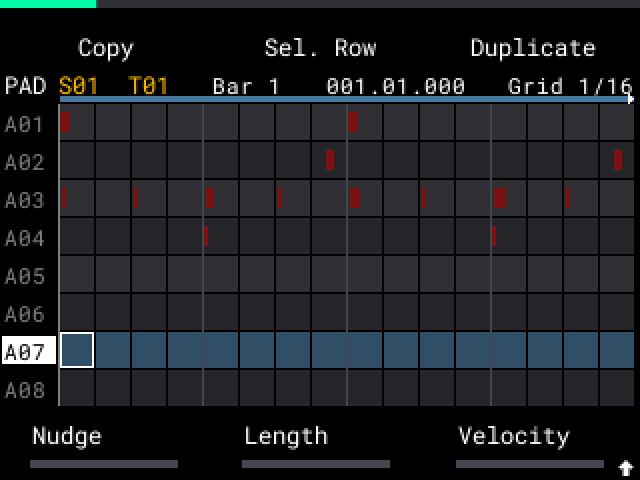
- ENCODER: カーソルを 1 ステップ動かします。SHIFT + ENCODER で行を選択します。- / + = 前／次のページ。
ヒント: Resample、Project、Time Correct、FADER メニュー、MIDI Config、PAD FX、SAMPLE SELECT の後は、Step Edit が同じカーソル、ページ、Steps、選択範囲のまま戻ります。
パッドでノートを追加する（Steps）
- SHIFT + B2 を押して Steps をオンにします（パッドビューを開いたときはオフ）。16 個のパッドが、そのページの 16 ステップになります。点灯したパッドにはノートがあります。
- 空のステップをタップするとノートを追加し、設定済みのステップをタップすると削除します（音は出ません）。
- 別の行を選択するには、SAMPLE を押しながらパッドを押します（音は出ません。Steps はオンのまま）。SAMPLE を押している間、パッドは SAMPLE 画面と同じように点灯します。SAMPLE だけを短く押すと SAMPLE 画面が開きます。パッドを押さずに SAMPLE を押して離すと、パッドビューに留まります。
- シーケンスの終わりより後のステップをタップしても、何も起こりません。
- 16 ステップは 1/16、1 小節です（または Settings > Pad View Grid のグリッド）。ズームについては、後述の Zoom を参照してください。
パッドを演奏する（Steps オフ）
Steps がオフ（Play）のとき、パッドは SAMPLE 画面の色で演奏されます。叩いたパッドがその行になります。SEQ RECORD がオンでシーケンス停止中は、パッドを叩くとカーソル位置にノートが追加され、カーソルが 1 ステップ進みます。
ノブでノートを編集する
- K1（Nudge）はノートをページ内で 1 ステップ単位で動かします（SHIFT を押すと細かく、ティック単位で、左右最大 1 ステップまで）。FADER は細かく動かします。K2（Length）は長さを設定します（1 ティック〜1 ページ。最も長いノートを表示します）。K3（Velocity、0〜127。最初のノートを表示します）はベロシティを設定します。
- パッドを押していない場合、ノブは Steps でも Play でも、選択範囲またはカーソル位置のノートを編集します。グリッドからずれたノートは、見えているセルに属します。
- MPC は 0.5 秒後に変更を書き込みます。書き込みごとに UNDO のステップが 1 つ増えます。ENCODER を回すか、ほかの操作をするまで、ノートはノブの下に保持されます。少し間を置いてもう一度回すことができます。
- Rec Quantize がオン（SHIFT + PAD 10）のとき: K1 は最初のノートをグリッドに合わせ、K2 は長さをグリッドステップの整数倍にします。SHIFT（細かい調整）を押すと、ノートは自由に動きます。
コピー、ペースト、消去
- B1（Copy）は、選択範囲またはカーソル位置のセルのノートを、ベロシティ、長さ、ステップ内の位置とともにコピーします（オートメーションやパッドプレッシャーは含まれません）。カーソルを動かして B3（Paste）を押します: 最初のステップがカーソルのステップに、一番上のパッドがカーソルの行に入ります。すべてのパッドをコピーした場合（SHIFT + ENCODER を押す）、各ノートはそれぞれのパッドに入ります。コピーするものがない場合、MPC は 「Nothing to copy」 と表示します。ノートがある場合、MPC は Merge か Replace かを確認します。コピー元と同じ場所にペーストしても、ノートがまだそこにある間は何も起こりません。別のシーケンスにペーストすることもできます。
- SHIFT + B1（Cut）は、ノートをコピーしてすぐに削除します。その後、Copy のときと同じように Paste します。B1（Cancel）ではノートは元に戻りません。UNDO を押してください。カットとペーストはそれぞれ UNDO の 1 ステップです。
- SHIFT + B3 は B3（Duplicate、または Copy の後は Paste）と同じように動作します。
- ERASE のみ（パッドなしで押して離す）で、選択範囲、カーソル位置のノート、または押しているステップをクリアします。UNDO 1 回で全部元に戻ります。
- ERASE + パッド: B2（Page）は、このページにあるそのパッドのノートとオートメーションを消去します。B3（Do It!）はシーケンス全体を消去します。
ズーム（SHIFT + K3）
- Steps オン: SHIFT + K3 でステップを Bar から 1/64T までズームします（1/32 では 16 個のパッドが半小節、1/4 では 4 小節）。Bar は 16 小節を表示します: パッドはノートの位置を示し、タップしてもノートは追加されません。
- ズームは、ユーザーの Time Correct（Rec Quantize）を変更しません。Steps をオフにする、トラックビューに移動する、Step Edit を閉じる、またはプロジェクトを保存すると、元の値に戻ります。
- Steps オフ: SHIFT + K3（Bars）でビューを 1、2、4、8 小節にズームします（トラックビューと同様）。グリッドは変わりません。操作は見えている列に作用し、K1 と K2 はグリッドステップ単位です。
Rec Quantize グリッド: SHIFT + PAD 10 を押します。ポップアップに On または Off が表示されます。K3 を回してグリッド（Bar〜1/64T）を選択し、B3（Do It!）または B1（Cancel）を押します。回さない場合、ポップアップは 2 秒後に閉じます。ポップアップはユーザー自身の値を設定し、ズームは変わりません。
#トラックビュー
トラックビューは、シーケンスのドラムトラックを表示します。各トラックには、Ch. Mixer と同じ独自の色があります。カーソルのあるトラックのノートは明るく、ほかは暗く表示されます。パッドビューと同様に、赤い線がシーケンスの終わりを示します。
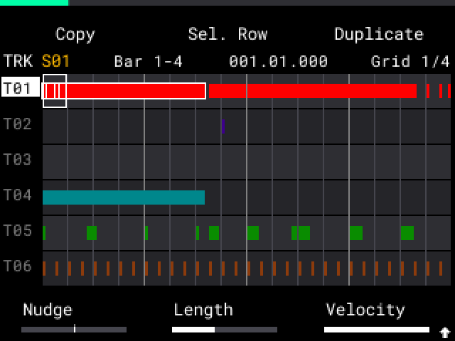
- 4 小節が表示されます。SHIFT + K3（Bars）でズームします: 1、2、4、8 小節。1 列はウィンドウの 1/16 です。- / + = 次／前の小節。
- ENCODER: カーソルを 1 列動かします。SHIFT + ENCODER で別のトラックに移動します。そのトラックは現在のトラックにもなります。
- パッドは、SAMPLE 画面の色で、カーソルのあるトラックを演奏します。
- K1（Nudge）、K2（Length）、K3（Velocity）、FADER、Rec Quantize は、パッドビューと同様に、見えているウィンドウ内で動作します。Nudge と Length はグリッドステップ単位（Time Correct の値、例: 1/16）です。SHIFT を押すと細かく、ティック単位です（Nudge は最大 1 グリッドステップまで）。
- B1（Copy）と B3（Paste）は、パッドビューと同様に動作します。ステップとパッドの代わりに、列とトラックを使います。
- Cut: Cut ボタンはありません（SHIFT + B1 は Delete です）。B1（Copy）を押し、次に ERASE（コピーは残ります）、続いて Paste します。カットした場所にペーストすることもできます。
- ERASE のみ（パッドなしで押して離す）で、選択範囲内のノートと、そのパッドプレッシャーを、短いメッセージとともにすぐにクリアします（ノート 1 つの場合は表示されません）。ほかのオートメーションは残ります。
- SHIFT + B1（Delete）: トラックの削除を参照。
- 行ラベルと行数: Settings > Track View Labels と Track View Rows。
#選択範囲
選択範囲は、両方のビューで同じように動作します。
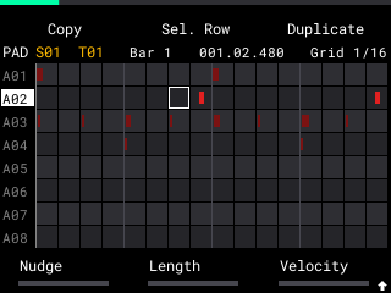
- カーソルを最初のセルに置いて ENCODER を押します（黄色い枠）。
- ENCODER を回します（SHIFT を押すと行方向）。選択範囲（水色）は、最初のセルからカーソルまでの長方形で、画面外にも広がります（小さな白い矢印）。
- 選択範囲は保持されます。ほかのボタンやノブ（ERASE も含む）を操作すると黄色い枠が終了し、ENCODER は再びカーソルを動かします。
- もう一度 ENCODER を押すと、選択が解除されます。
- B2（Sel. Row）: カーソルの行を選択範囲に追加または削除します。選択範囲がない場合は、シーケンス全体にわたって行全体を選択します。
- SHIFT + ENCODER を押すと、すべての行（パッドバンクのすべてのパッド、またはすべてのトラック）を選択します。選択範囲がない場合は、シーケンス全体にわたって選択します。もう一度押すと選択が解除されます。
- 選択範囲がない場合、ノブとボタンはカーソルのセルだけを対象にします。
- ノートは 1 つのブロックとして移動します。1 つのノートが同じノートに重なる場合は、どのノートも移動しません。
- B3（Duplicate）は、選択範囲のコピーを、その直後に 1 回の押下でペーストします。選択範囲は新しい部分に移動するため、次に押すとさらに続きます。選択範囲がない場合は、新しいセルが選択範囲になります。Copy の後は、B1 = Cancel、B3 = Paste（1 回のみ）となり、その後 Copy と Duplicate に戻ります。
- 1 回の Copy または Duplicate で扱えるのは最大 8192 ノートです。それを超えると、ディスプレイに Too many notes と表示され、何もコピーされません。
- SHIFT + PLAY は、選択範囲の小節をループ再生します。ループは、ほかの画面や STOP の後も保持されます: SHIFT + PLAY でその最初の小節からもう一度再生します。PLAY は 1 小節目から再生してループを終了します。Step Edit で別のシーケンスを選んだ場合も同様です。
- ある部分を繰り返し録音するには: テイクごとに STOP を押し、SEQ RECORD と SHIFT + PLAY を押します。
- 1 回の UNDO で、クリア、移動、ペーストが元に戻ります。
#Automate: フェードを書き込む
Automate は、トラックビューの選択範囲（またはカーソルのセル）に、トラックボリュームまたはトラックフィルターのフェードを書き込みます。
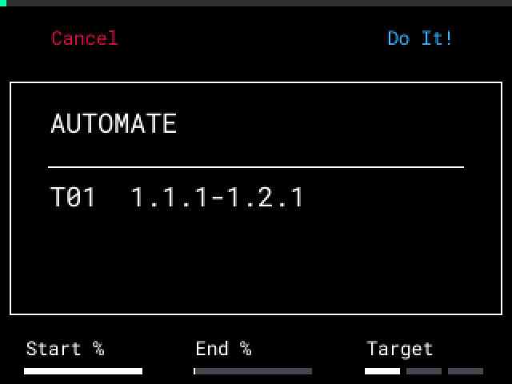
- トラックビューで範囲を選択します。
- SHIFT + B2（Automate）を押します。
- K1 = Start %、K2 = End %（100 % = 現在の値、0 % = 無音）。
- K3 = Volume、LP Filter、HP Filter。
- SHIFT + K3 = Curve: Linear、Log（等 dB ステップ、自然なフェードアウト）、S-Curve。
- B3（Do It!）または B1（Cancel）を押します。
- フィルターのフェードには、トラックインサートとしてのフィルターが必要です。トラックにない場合は、MPC が空きのインサートスロットに追加します。4 つのスロットがすべて埋まっている場合は、何も書き込みません。
- マスターフェード: すべてのトラックを選択し（SHIFT + ENCODER を押す）、Volume を選択します。
- 選択範囲にボリュームオートメーションがある場合、B3 は Replace になります。
フェードの削除:
- トラックビューで範囲を選択し、SHIFT + B2（Automate）を押します。
- K3 でターゲットを選択します。
- B2（Remove）を押します: MPC は、選択したトラックの選択範囲内で、そのターゲットのフェードポイントを削除します。
- このシーケンス内の、選択したトラックのすべてのフェード（Volume、LP Filter、HP Filter）を削除するには、SHIFT を押しながら B2（Remove All）を押します。Remove All には選択範囲は関係ありません。ウィンドウを開いた後に SHIFT を離し、もう一度押してください。SHIFT + B2 から押したままの SHIFT は数えられません。
- B2 は、削除するものがあるときだけ表示されます。
- フィルターインサートはトラックに残ります。そのフェードだけが消えます。
- 削除した部分では、その手前の値が聞こえます。シーケンス内にフェードポイントがなくなると、ユーザー自身の値（ミキサー、FADER、Pad Mix）が聞こえます。
- 1 回の UNDO で、Remove または Remove All が削除したものがすべて元に戻ります。
- 1 回の UNDO でフェードが削除され、古いボリュームが戻ります。フェードの途中でシーケンスを止めた場合も同様です。
- フェードは、書き込んだシーケンスに属します。ほかのシーケンスは、ユーザー自身の値（ミキサー、FADER、Pad Mix）を再生します。フェード内の 100 % はその値です。フェードのないシーケンスでボリュームやフィルターを変更すると、それがすべてのシーケンスの新しい値になります。ボリューム変更の UNDO でも、その値が戻ります。
- フェードのあるシーケンスで停止すると、フェードの開始位置の値が聞こえます。選択範囲の前後では、ユーザー自身の値が聞こえます。
ヒント: ボリュームフェードは、シーケンスを停止した状態で書き込んでください。シーケンスの再生中に書き込むと、UNDO は STOP 時のボリュームを保持します。その場合は、ミキサーでボリュームを設定し直してください。
ヒント: シーケンスの終わりまでのフェードを書く前に、シーケンスの長さを設定してください。フェードアウトの後でシーケンスを長くすると、古い終わりの後はユーザー自身の値が聞こえます。新しい長さに合わせてフェードを書き直してください。フェードのあるシーケンスを選択した状態でプロジェクトを保存すると、フェードのないシーケンスでその後に行ったユーザー自身の値の変更が、次の起動後に元に戻ることがあります。その場合は、値を設定し直してください。
#Dup. Track
Dup. Track は、トラックのコピーを、イベントなし、またはイベント付きで作成します。
- トラックビューで、カーソルをトラックに置きます。
- SHIFT + B3（Dupl/Expl）を押します。
- B2（Dup. Track）を押します。MPC はコピーが置かれる場所を表示します。
- B2（Events）で Events を On または Off に設定します（Off から始まります）。On = コピーがすべてのシーケンスのイベント（ノートとパッドオートメーション）を持ちます。
- B3（Do It）を押します。B1（Cancel）: コピーしません。
トラックエフェクト: トラックにトラックインサートエフェクトがある場合、Do It は各選択肢で作られるエフェクトの数を表示します。Events の選択はそのまま保持されます。
- B3（To Submix）: エフェクトは、同じ設定とオン／オフの状態で、最初の空きサブミックス（エフェクトがなく、何も送られていないもの）に 1 つだけ配置されます。コピーにはトラックエフェクトが付きません。トラックとコピーの Out は、そのサブミックスに送られます。元のトラックにはエフェクトが残りますが、オフになります。これにより、2 つのトラックが 1 セットのエフェクトの CPU を使うことになります。空きサブミックスがない場合、B3 は表示されません。
- B2（Copy FX）: コピーが、エフェクトの独自のコピーを持ちます。
- B1（Cancel）: コピーしません。
コピーは「Track n」（n = その位置）という名前になります。元のトラックの直後に置かれ、現在のトラックになります。すべてのパッド、サンプル、パッド設定、エフェクト、ルートは保持されます。コピーはサンプルを共有し（追加メモリなし）、ミュートされず、独自の色が付きます。UNDO を 1 回押すとコピーが削除されます。To Submix の後は、同じ UNDO でエフェクトとトラックの Out も元に戻ります。
ヒント: To Submix では、各トラックはトラックボリュームの後でエフェクトに入ります。リバーブ、ディレイ、EQ は同じ音になります。コンプレッサーやディストーションは、トラックボリュームが 0 dB の場合のみ同じ音になります。
ヒント: トラックが 16 個ある場合や、ドラムトラックでないトラックでは、B2 は表示されません。質問の 1 行目に理由が表示されます。
#Explode
Explode は、ノートのあるパッドを、それぞれ新しいトラックに分けます。
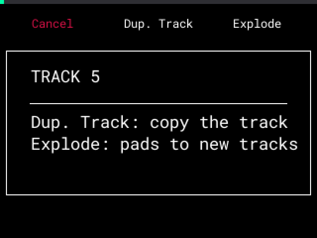
- トラックビューで、カーソルをトラックに置きます。
- SHIFT + B3（Dupl/Expl）を押します。
- B3（Explode）を押します。Explode できない場合は、MPC が理由を表示し、B3 は表示されません。
- MPC はパッドの数と新しいトラックを表示します。B3（Do It）を押します。B1（Cancel）: Explode しません。
- カーソルのあるトラックの現在のシーケンスでノートのある各パッドは、そのトラックの直後に新しいトラックを持ちます。同じミュートグループのパッドは、まとめて 1 つのトラックになります。元のトラックはミュートされます。
- Out が Master に設定されているパッドは Track に変更され、トラックストリップ、ボリューム、ミュート、ソロが機能するようになります。Out がサブミックスや別の出力に設定されているパッドは、そのまま保持されます。
- 新しいトラックは、各シーケンスで元のトラックの RT Swing を引き継ぎます。
- その後ろにある「Track n」という名前のトラックには、新しい位置の番号が付きます。自分で付けた名前は変わりません。
- 1 回の UNDO で、サブミックスのエフェクトを含め、Explode 全体が取り消されます。Explode はシーケンス停止中のトラックビューでのみ動作します。
トラックエフェクト: トラックにトラックインサートエフェクトがある場合、手順 4 は各選択肢で作られるエフェクトの数を表示し、B3 は Do It ではなくなります。
- B3（To Submix）: エフェクトは、同じ設定とオン／オフの状態で、最初の空きサブミックス（エフェクトがなく、何も送られていないもの）に 1 つだけ配置されます。新しいトラックの Out は、そのサブミックスに送られます。元のトラックにはエフェクトが残りますが、オフになります。これにより CPU の使用量がかなり少なくなります。空きサブミックスがない場合、B3 は表示されません。
- B2（Copy FX）: 各新しいトラックが、エフェクトのコピーを持ちます。
- B1（Cancel）: Explode しません。
ヒント: To Submix では、各トラックはトラックボリュームの後でエフェクトに入ります。リバーブ、ディレイ、EQ は同じ音になります。コンプレッサーやディストーションは、トラックボリュームが 0 dB の場合のみ同じ音になります。
ヒント: Mute Targets（MPC One、Live、X のプロジェクト由来の、1 つのパッドが別のパッドを止める機能）は、1 つのトラック内でのみ動作します。Explode の前に 2 つのパッドを同じミュートグループにして、1 つのトラックにまとめてください。
#トラックの削除
トラックビューで、SHIFT + B1（Delete）を押します。確認の後、すべてのシーケンスにあるノートとともに、カーソルのあるトラックを削除します。シーケンス停止中のみ動作します。最後の 1 つのトラックは常に残ります。その後ろにある「Track n」という名前のトラックには、新しい位置の番号が付きます。UNDO 1 回で全部元に戻ります。
#Step Edit でのフェーダー
FADER メニュー（SHIFT + PAD 9）で、B2 を使って Step Edit でのフェーダーの動作を設定します。
- Step: Nudge（標準と同じ）: フェーダーでノートを動かします。
- Step: Same: フェーダーは、メニューで設定した動作を行います。
FADER メニューの Track Volume（標準では「Kit Volume」）については、FADER でのトラックボリュームを参照してください。
#ミキサー
どのモードからでも PAD FX を押すとミキサーが開きます。もう一度 PAD FX をタップすると戻ります。標準の Pad FX と Flex Beat 画面については、ショートカットを参照してください。
ミキサーは、最後に見たページで開きます。常にパッドインサート（Pad inserts）または Ch. Mixer で開くようにするには、Settings > Mixer Opens On を設定してください。
#インサートページ
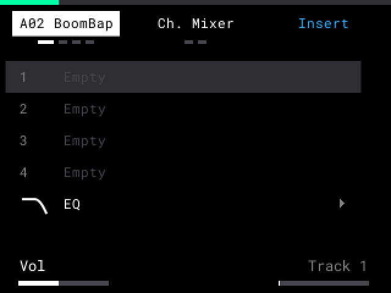
- B1 は、音の流れの順に Pad > Track > Submix > Master と切り替えます。B2 はミキサーを開きます。標準と同様に、もう一方のグループから B1 または B2 を押すと、常にそのグループの最初のページが開きます。
- Submix には、現在のパッド（またはそのトラック）のサブミックスが表示されます。ない場合は最後のサブミックスです。
- ENCODER を回して、4 つのインサートスロットのいずれかを選択します。
- パッド、トラック、サブミックスを選択するには: PAD FX を押しながらパッドを押します（音は出ません）。パッドには、SAMPLE 画面の色（Pad）、SHIFT + PAD BANK の色（Track）、または紫（Submix）が表示されます。
- または PAD FX を押しながら ENCODER を回します: 前または次のパッド（128 個すべて。パッドバンクも追従します）、トラック、サブミックス。最後のトラックより 1 つ先（Track nn+）に進んで PAD FX を離すと、PAD BANK + ENCODER のときと同様に、新しいトラックが作られます。
- PAD BANK + ENCODER（トラック）と SEQ + ENCODER（シーケンス）も、ミキサーで動作します。
- K1 = ボリューム。K3（Out）= 音の送り先: Track、Submix 1-8、または Master。Pad ページでは、Trk 1 = そのパッドのトラック（トラック 1）。
- K2（Pad Grp、Trk Grp、Sub Grp）= ミュートグループ。ミュートグループを参照。
| 操作 | 空きスロット | エフェクトのあるスロット |
|---|---|---|
| B3 または ENCODER 押し込み | Insert: Insert FX リストを開く | B3 = Edit: エフェクトページを開く。ENCODER 押し込み = エフェクトのオン／オフ |
| - / + | 何も起こらない | エフェクトを 1 スロット上／下へ移動 |
| SHIFT + B3 | 何も起こらない | Delete（先に確認） |
Insert FX リスト: 6 つのカテゴリー（Delay/Reverb、EQ/Filter、Dynamics、Harmonic、Modulation、Vintage）があり、Insert FX List で On になっているエフェクトが表示されます。ENCODER を押すと、カテゴリーが開くか、エフェクトが読み込まれます。トラックやサブミックスには Color Comp. も、トラック・サブミックス・マスターには Kill EQ もあります。ここにしかなく、Knob FX にはないもの: Mother Ducker、Mother Ducker Input、AIR Compressor と AIR Stereo Width。読み込みは UNDO の 1 ステップです。REDO は、読み込み時の値でエフェクトを戻します（例: AIR Compressor はニュートラルの状態）。
EQ 行: Pad ページで（Settings > Pad EQ が On のとき）、4 つのスロットの下にある EQ 行が、そのパッドの EQ ページを開きます: 選択して B3（Edit）または ENCODER を押します。EQ ページから PAD FX を押すと、Settings > Mixer Opens On の設定に関係なく、常に EQ が選択された Pad ページが開きます。
エフェクトページ: 6 つの主要パラメーターを表示します。K1〜K3（SHIFT: 2 層目）で変更します。MIDI Config の Parameter Takeover に従います。B3 = Bypass。B1 または PAD FX = 戻る。
- LP Filter、HP Filter、BP Filter は、カットオフ付きのフィルターカーブと、フィルター後のリアルタイムスペクトラムを表示します。
- Limiter は 3 つのメーターを表示します: In（Gain の後）、GR（ゲインリダクション）、Out。Bypass がオンのときは、ゼロのままです。
トラックまたはサブミックス上のエフェクトのノブ操作をオートメーションとして録音するには:
- SEQ RECORD を押し、次に PLAY を押します。
- カウントインの後、エフェクトページでノブを回します。
- STOP を押します。シーケンスがノブの動きを再生します。
Undo 1 回で、録音全体が削除されます。録音以外では、ノブの操作に Undo はありません。
ヒント: パッドやマスター上のエフェクトは、オートメーションを録音しません。
トラックの MIDI チャンネル: Track ページで SHIFT + K3（MIDI）。MIDI アウトを参照。
UNDO と REDO は、ミキサー内の操作に対して動作します。SEQ RECORD と PLAY 中は、MPC がエフェクトのオン／オフとボリュームを録音します。
ヒント: トラックインサートがパッドの音を受け取るのは、そのパッドがそのトラックに送られているとき（K3 = Track）だけです。Submix 1 の場合、パッドはトラックをスキップします。
#トラック、サブミックス、パッドの名前変更
- PAD FX を押してミキサーを開きます。
- Pad、Track、または Submix ページに移動します。
- SHIFT + B1（Rename）を押します。
- 名前を変更するか、SHIFT + B3（Preset）を押してリストから選びます（B2 の Abbreviate で、Drm、Vox、Rvb などの短い名前になります）。
- K1 でトラックまたはパッドの色を設定します。
- B3（Do It!）を押して保存します。
プロジェクトはパッド名を保持します。名前を空にすると、パッドはサンプル名に戻ります。
#ミュートグループ
ミキサーの Pad、Track、Submix ページの K2 で、ミュートグループを設定します（- = Off）。Ch. Mixer と Pad Mixer では、SHIFT + K2 で選択中のストリップのグループを設定します。パッド、トラック、サブミックスには、それぞれ別のグループがあります。
- Pad（Pad Grp）: 標準のパッド Mute Grp（Off、1-32）: チョーク。パッドは同じグループのほかのパッドを止めます。K2 を 1 回回すと UNDO のステップが 1 つ増えます。
- Track（Trk Grp）: Off または 1-8。トラックをミュートまたはミュート解除すると、同じグループのほかのトラックも同じミュート状態になります。これは Track Mute と、Ch. Mixer の Mute で動作します。UNDO 1 回で、すべて元に戻ります。
- Submix（Sub Grp）: Off または 1-8。Ch. Mixer でサブミックスの Mute を押すと、同じグループのほかのサブミックスもミュートまたはミュート解除されます。
ヒント: Track Mute では、トラックのセルにグループが表示されます（例: G1）。Solo はグループに従いません。SEQ RECORD と PLAY 中は、MPC がグループ内の各トラックのミュートを録音します。
#Kill EQ インサート
EQ ページの 3 バンドキル EQ は、トラック、サブミックス、マスター用のインサートとしても使えます。ノブ、クロスオーバー、ウィンドウは同じです。
- PAD FX を押します。Track または Submix には B1、Master には B2 を押します。
- 空きスロットを選択して B3（Insert）を押します。
- EQ/Filter を開き、Kill EQ を選択して ENCODER を押します。Kill EQ ページが開きます。B3 = Bypass。B1 または PAD FX = 戻る。スロットの B3（Edit）で、もう一度開けます。
- 読み込みは Undo の 1 ステップです（例: 「Kill EQ Slot 1 T01」）。
- プロジェクトは Kill EQ の値を保存します。
- トラックやサブミックスでは、エフェクトページと同様に、ノブがオートメーションを録音します。ノブは、最後に再生された値を保持します。
ヒント: マスター上の Kill EQ は、標準のエフェクトと同様に、オートメーションを録音しません。すべてのトラックにオートメーションをかけるには、トラックを Kill EQ のあるサブミックスに送る、各トラックに Kill EQ を挿す、またはパッドの EQ ページを使ってください。
ヒント: SampQOL OS がない環境では、Kill EQ は標準エフェクトの PEQ 2-Band, 2-Shelf として再生されます。バンドはキルにならず、右いっぱいは +18 dB になります。
#マスター
マスターには、標準と同じく Pad FX、Flex Beat、Color Comp.、Knob FX の 4 つのスロットがあります。Knob FX スロットには、FX Select のエフェクトが表示されます（例: 「(Knob FX) LP Filter」）。
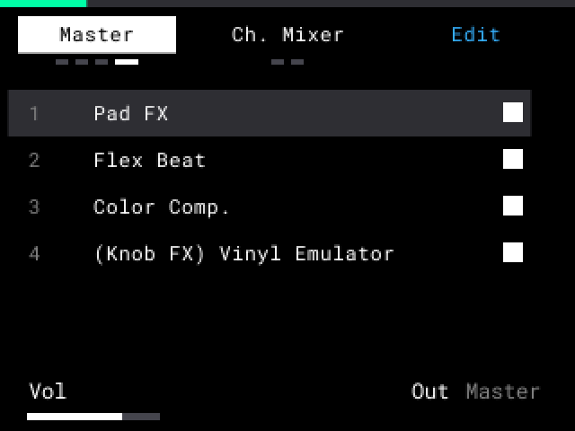
削除: スロットを選択し、SHIFT + B3 を押して、B3（Remove）を押します。CPU の節約になります。UNDO で元に戻せます。
非表示（Hidden）: 同じウィンドウで、B2（Use Hidden）をオンにします。エフェクトは動作し続けますが、スロットを空けます。スロット 4 の下のグレーの行が、非表示のエフェクトを示します。マスターの Color Comp. が非表示のとき、COMPRESSOR 画面に「Hidden」と表示されます。非表示のエフェクトの画面は、通常どおり開きます。
マスターに戻す: 空きスロットを選択して B3（Insert）を押します。非表示のエフェクトはリストの先頭にあります（例: 「Flex Beat (Hidden)」）。B3（Select）を押すと、エフェクトが設定を保ったままこのスロットに入ります。
Pad FX、Flex Beat、Color Comp. は、別のスロットに移動できます（- / +）。Knob FX は自身のスロットに留まります。
Color Comp. Off = COMPRESSOR 画面の Bypass。
Edit（B3）はエフェクトの標準画面を開きます。PAD FX で、同じスロットのままミキサーに戻ります。
削除したエフェクトの画面を開くと、MPC が元に戻すかどうかを尋ねます（B2 = Hidden、B3 = Insert。4 つのスロットが埋まっている場合: 「MASTER FULL」）。
#Channel Mixer と Pad Mixer
B2 を押します: Ch. Mixer、次に Pad Mixer。各ミキサーは 1 ページに 8 つのストリップを表示します。ENCODER を回してストリップを選択し、ほかのストリップを表示します。
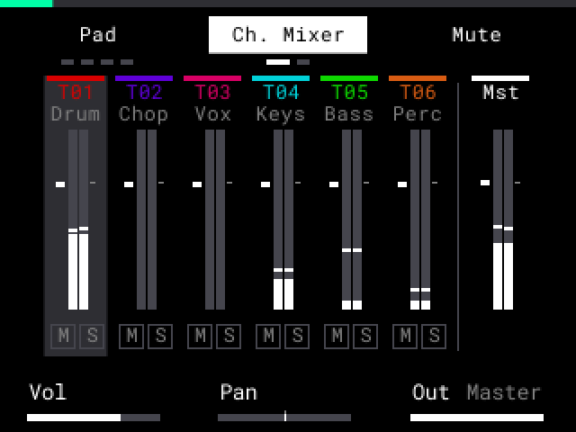
- Ch. Mixer: ノートのあるトラック、使用中のサブミックス、マスター。
- Pad Mixer: 現在のトラックのうち、サンプルとノートがあるパッド。パッドを演奏すると、そのストリップが選択されます。
- 各ストリップには、ステレオメーターがあります（0 dB を超えると赤）。ピーク線は、SHIFT + ENCODER（すべてのストリップ）を押すまで残ります。
- K1 = ボリューム、K2 = パン（L50〜C〜R50）、K3 = 出力。
- SHIFT + K2 = 選択中のストリップのミュートグループ: Pad Grp、Trk Grp、Sub Grp（- = Off）。インサートページの K2 と同じです。SHIFT を押すとグループが表示されます。マスターストリップにはグループがありません。そこでは SHIFT + K2 もパンになります。ミュートグループを参照。
- SHIFT + B1（Inserts）は、選択中のストリップのインサートページを開きます。B2 でミキサーに戻ります。
- FADER も、MIDI Config の Fader Takeover に従って、選択中のストリップのボリュームを設定します。FADER メニューが Off のときは、FADER は何もしません。
- ENCODER でボリューム: ENCODER を押し（黄色い枠）、回して、もう一度押すと、再びストリップを選択できます。
- B3 = Mute、SHIFT + B3 = Solo。SHIFT + B2（Clear M/S）は、そのページのすべてのミュートとソロをオフにします。
- トラックストリップの Mute は Track Mute です（ミュートの録音を参照）。
- サブミックスの Solo は、そのサブミックスに送られているトラックとパッドをソロにします。
#すべてのパッドに対する Knob FX
Knob FX はマスター上にあります。すべてのトラックのすべてのパッドが、これを通って再生されます。
- K1-K3 と SHIFT + K1-K3 は、標準と同じように動作します。どの画面でも Knob FX を変更も参照してください。
- FX Select（SHIFT + KNOB FX）では、すべてのパッドが点灯し、B2（All Pads）はありません。B3（Bypass）は標準と同じように動作します。
- パッドの Output は、設定したままです。Knob FX の対象となるパッドを選択することはできません。
- 標準のプロジェクト: Mod は、読み込み時に Knob FX をマスターに移します。すべてのパッドが使っていたわけではない場合は、バイパスの状態で始まります。FX Select で B3（Bypass）を押すと、すべてのパッドに対してオンになります。
#どの画面でも Knob FX を変更
画面を離れずに、別の Knob FX エフェクトを選択できます。
- KNOB FX を押し続けます。エフェクトのリストが画面の上に表示されます。読み込まれているエフェクトはオレンジ色です。
- ENCODER を回して、リスト内の次または前のエフェクトを選択します。
- KNOB FX を離します。選択したエフェクトが読み込まれ、リストが閉じます。元の画面に留まります。
- KNOB FX を短く押すと、標準と同じく、離したときに Knob FX モードがオン／オフされます。ENCODER を回しながら押し続けると、そのモードが保持されます。KNOB FX + 別のボタンまたは K1-K3 は、標準と同じように動作します。
- 新しいエフェクトは、デフォルトの値で始まります。標準の FX Select と同様に、この変更には Undo ステップがありません。
- 変更時にクリックノイズは出ません。古いエフェクトがフェードアウトし、新しいエフェクトは音の準備ができたとき（0.1 秒未満）にフェードインします。バイパス中のエフェクトは、バイパスのままです。
- リストには、Knob FX List で On になっているエフェクトのみが表示されます。
- これは、FX Select、ミキサー、名前変更画面、ダイアログの表示中、マスターに Knob FX がないときは動作しません。
#FADER でのトラックボリューム
FADER メニューの Track Volume は、現在のトラックのボリュームを設定します。Ch. Mixer のトラックストリップの K1 と同じボリュームです。
- SHIFT + PAD 9 を押します。ENCODER で Track Volume を選択して押します。フェーダーがオフの場合は、B3 を押します。B1（Back）を押します。
- FADER を動かします。現在のトラックのボリュームが変わります。
- UNDO は FADER の動きを取り消しません（標準の Kit Volume と同じ）。
- SEQ RECORD と PLAY 中は、MPC がボリュームを録音します。消去するには、ERASE を押しながら FADER を動かします（オートメーションの消去を参照）。
ヒント: Track Volume が変更するのは、出力がそのトラックに設定されているパッドだけです。出力がサブミックスやマスターのパッドは、これに従いません。
#トラックまたはサブミックス上の Color Comp.
Insert FX リスト（Dynamics）から、トラックまたはサブミックスに Color Comp. を挿せます。Edit でその COMPRESSOR 画面が開き、上部に例えば 「T01」 や 「Sub 2」 と表示されます（PAD FX = 戻る）。標準と同様に、SHIFT + PAD 5 でマスターの Color Comp. が開きます。
#Mother Ducker
Mother Ducker は、別の音が鳴っている間、ある音を小さくします（サイドチェイン: 例えば、キックのたびにベースが小さくなる）。Mother Ducker Input は、制御する側の音に、Mother Ducker は小さくなる側の音に挿します。両者はバス（Bus 1〜Bus 8）を通じて接続されます。
- Insert FX リスト（Dynamics）から、キック（パッド、トラック、サブミックス）に Mother Ducker Input を挿します。K1（Bus）を設定します（例: Bus 1）。
- ベースに Mother Ducker を挿します。K1（Bus）を同じバスに設定します。
- 両方を再生します。ベースがどれだけ小さくなるかを、K2（Threshold）と K3（Ratio）で設定します。
各ページには、タイトルの下に、同じバス上の相手側が表示されます。
| 表示 | 意味 |
|---|---|
| Input: A01 Kick | パッド A01 の Mother Ducker Input が、この Ducker を制御しています。 |
| Input: T02 Bass +1 | このバス上に 2 つ以上の相手がいます。最初の 1 つが表示されます。 |
| Input: A01 Kick (Bypass) | 相手側がバイパスされています（グレー）: ダッキングなし。 |
| No Input on Bus 2 | このバス上に相手側がありません（グレー）: ダッキングなし。両方の K1（Bus）を確認してください。 |
Mother Ducker Input ページでは、テキストが Ducker: で始まります。K1（Bus）は、どちらのページでも常にバスを表示します。
Mother Ducker ページには、GR（ゲインリダクション、現在どれだけ小さくなっているか）も dB で、オレンジ色のバー（0〜60 dB）とともに表示されます。GR 0.0 = ダッキングなし（Bypass がオンのときも同様）。
ヒント: ダッキングは 60 dB を超えることもあります。ダッキングを穏やかにするには、K2（Threshold）を高くするか、K3（Ratio）を低くしてください。
| ノブ | Mother Ducker | SHIFT + ノブ |
|---|---|---|
| K1 | Bus（1-8） | Attack |
| K2 | Threshold | Release |
| K3 | Ratio | Soft Knee（dB） |
- 新しい Mother Ducker は、標準の値で始まります: Bus 1、-6 dB、6:1、Attack 10 ms、Release 100 ms、Soft Knee 0 dB。
- Mother Ducker は音を小さくするだけです。Input が鳴っていないときは、Mother Ducker がない場合と同じ音量になります（Auto Make-Up Off、Make-Up Gain 0 dB。ノブにはありません。標準は Auto Make-Up が On）。
- Soft Knee は、Threshold の付近でダッキングの始まりをなだらかにします。0 dB では、ダッキングは Threshold ちょうどで始まります。
- Mother Ducker Input は、（標準と同様に）パッドフェーダーの前にあります。Vol が 0 のパッドでもダッキングします。
- ダッキングを止めるには、Mother Ducker Input ページで Bypass（B3）を押します。
ヒント: 聞こえないリズムでダッキングさせるには、Vol が 0 のパッドに Mother Ducker Input を挿してください。
#AIR Compressor と AIR Stereo Width
追加のインサートエフェクトが 2 つあります: AIR Compressor（Dynamics）と AIR Stereo Width（Modulation）。
AIR Compressor はニュートラル（0 dB、1:1）の状態で始まります。K1（Threshold）と K2（Ratio）を回すと効果が聞こえます。
| ノブ | AIR Compressor | SHIFT + ノブ |
|---|---|---|
| K1 | Threshold | Attack |
| K2 | Ratio | Release |
| K3 | Mix | Output |
AIR Stereo Width は、Width を 0 % にすると、左右のチャンネルを 1 つのモノラルの音として再生します。
| ノブ | AIR Stereo Width | SHIFT + ノブ |
|---|---|---|
| K1 | Width | Low |
| K2 | Level Trim | Mid |
| K3 | Pan Trim | High |
#Pad FX: Fixed
標準の Pad FX 画面で、Fixed を使うと、タップした後もパッドのエフェクトが保持されます。
- 標準の Pad FX 画面を開きます（SHIFT + PAD FX、続いて B2。ショートカットを参照）。
- B3 を押して Fixed をオンにします（白いボックス = オン）。
- パッドをタップします。そのエフェクトは、もう一度パッドをタップするまで、（標準の Latch と同様に）ほかの画面でもオンのままです。FADER で、エフェクトがどれだけ聞こえるかを設定します。
- Fixed がオンのとき、FADER はこの画面でほかの機能を持ちません。Fixed をオフにすると、すべての Fixed エフェクトが止まります。
- Fixed と Latch のエフェクトは、1 つのパッドのリサンプルのプリントに含められます。
- 標準の Latch がオンのパッドは、Fixed がオンでも標準と同じように動作します。
- MPC は再起動後も Fixed の設定を保持します。
#Knob FX List と Insert FX List
使わないエフェクトを非表示にできます。FX Select と KNOB FX 長押しリスト用のリスト（Knob FX List）と、ミキサーの Insert FX リスト用のリスト（Insert FX List。インサート専用のエフェクトも含む）は別々です。
- Settings で、Knob FX List > または Insert FX List > を選択し、ENCODER を押します。
- エフェクトを選択し、ENCODER を押して On または Off にします。
- B1 または B2 を押して戻ります。
- FX Select では、読み込まれているエフェクトは Off になっていても常に表示されます。
- これらのリストは、プロジェクトを変更しません。
- リストのすべてのエフェクトが Off の場合、そのリストはすべてのエフェクトを表示します。
#オートメーションの消去
#パッドのすべてのオートメーションを消去
- ERASE を押しながらノブまたはフェーダーを動かします。
- ERASE AUTOMATION ウィンドウで B2（All）を押します。
- B3（Do It!）を押します。このシーケンス内のそのパッドのすべてのオートメーションが消えます: Pad Mute、Filter、EQ、Level など。ノートは残ります。
- UNDO が使えます。
- B2（All）は、ミュートモード（ERASE + パッド）でも動作します。
- Settings > Erase All Starts も参照してください。
ヒント: 録音の音がおかしいのに、どのオートメーションが原因かわからない？ そのパッドのすべてのオートメーションを消去してみてください。
#トラックボリュームの消去
- FADER を Track Volume に設定します（FADER でのトラックボリュームを参照）。
- ERASE を押しながら FADER を動かします。
- B3（Do It!）を押します。このシーケンス内の現在のトラックの録音済みボリュームが消えます。ほかのトラックとノートは残ります。
- UNDO が使えます。
#読み込みと保存
#Sample Select でのプレビュー
Sample Select では、パッドでファイルをプレビューできます。Own Sample にすると、サンプルのあるパッドは自分自身の音を再生するため、ファイルをキットと聞き比べられます。
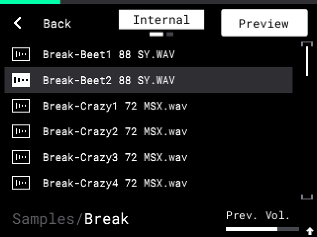
- SAMPLE SELECT を押して、オーディオファイルを選択します。
- パッドを押します。そのパッドが選択パッド（読み込み先）になり、ファイルが最後まで再生されます。
- K3（Prev. Vol.）を回して、プレビューのボリュームを設定します。
ヒント: 長いフォルダ名のせいで Prev. Vol. が隠れる場合は、SHIFT を押すと表示されます。
ファイルをキットと聞き比べるには:
- SHIFT + K2 を右に回します（Own Sample）。
- サンプルのあるパッドを押します。そのパッドは自分自身の音を再生し、選択パッドは変わりません。選択中のパッドまたは空のパッドは、ファイルを再生します。
- SHIFT + K2 を左に回すと、再び Preview になります。
B3（Preview）は、標準のオートプレビューのオン／オフです。SHIFT + B3 は、SD カード上の標準の Delete です。
ヒント: MPC は K2 の選択を記憶します（Settings > Sample Select Pads Play）。Own Sample のときにサンプルのあるパッドに読み込むには、Preview に設定するか、SAMPLE SELECT を押す前にそのパッドを選択しておきます。
#Sample Select での新規フォルダ
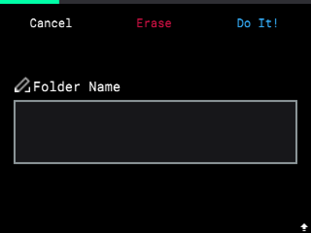
- SAMPLE SELECT を押します。B2 を押して External（SD カード）を選択します。
- 新しいフォルダを作りたい場所のフォルダに移動し、その中のフォルダを 1 つ選択します（空のフォルダでは何も選択されません）。B3 に New Folder が表示されます。
- B3 を押します。標準と同じように名前を入力します。
- B3（Do It!）を押します。B1（Cancel）ではフォルダは作られません。
同じ名前がある場合、MPC はフォルダを作らず、「A folder with this name already exists」と表示します（B3 = OK）。Internal は読み取り専用です。そこでは B3 に New Folder は表示されません。
#ブラウザ
- SAMPLE SELECT と Load Project で、SHIFT を押しながら ENCODER を回すと、10 行ジャンプします。
- SAMPLE SELECT と Load Project で、FADER を動かすとリストをスクロールします（上 = 最初の行）。そこで FADER メニューの機能を使いたい場合は、Settings > Fader Scrolls List を Off にしてください。
- ブラウザは、各フォルダ内での位置を記憶します。
- Settings の Start Drive で、起動時のドライブを設定します: Sample Select は SAMPLE BROWSER、Load Project は PROJECT。
- ブラウザは、ドライブのルートにある autorun フォルダ（SampQOL OS）を表示しません。確認するにはコンピューターを使ってください。
- SD カードを Eject（SHIFT + B2）した後、もう一度挿入すると、カードは同じパスになるため、Home Folder と Export フォルダは正しいまま保たれます。標準では、カードが新しいパスになることがよくありました。
#フォルダへの保存
Save Sample と Save Project は、選択したフォルダに保存します。
- 名前入力画面を開きます: SHIFT + SAMPLE SELECT（Save Sample）、または SHIFT + PAD 16 と Save Project。
- 標準と同じように名前を入力します。
- B3（Do It!）を押します。フォルダページが、前回保存したフォルダで開きます。
- ENCODER を回してフォルダを選択します。ENCODER を押すと開きます。B1（Up）で 1 つ上のフォルダへ（ドライブのルートでは名前入力画面に戻り、保存はされません）。B2 で Internal または External を選択します。
- B3（Save）を押します。MPC は、ページに表示されているフォルダに保存します。
同じ名前がある場合、MPC は「Sample Already Exists」（標準と同じ）または PROJECT EXISTS（B3 = Overwrite、B1 = Cancel）と確認します。
ヒント: 起動後は、フォルダページが、Settings の Start Drive にある標準のフォルダ（Samples/User または Projects/User。SD カードでは Projects）で開きます。
#Home Folder
Sample Select を、常に自分専用のフォルダで開きます。
- 設定で Home Folder を選択し、ENCODER を押します。フォルダページが開きます。
- フォルダへの保存（手順 4）と同じようにフォルダを選択します。
- B3（Use Folder）を押します。ドライブのルートで B1（Back）を押すと、変更せずに戻ります。
- Sample Select Opens を Home Folder に設定します。
SAMPLE SELECT を押すたびに、ブラウザは Home Folder で開きます。メッセージや SHIFT メニューの後は、ブラウザは直前の場所に留まります。
ヒント: Home Folder が存在しない場合（削除された、または SD カードがない）、Sample Select は SAMPLE BROWSER の Start Drive で開きます。
#ランダムなプロジェクト名
- Save Project（SHIFT + PAD 16）に移動します。
- SHIFT を押しながら B3（Random）を押します。名前欄にランダムな名前が表示されます（例: 「Velvet Alley」）。もう一度押すと別の名前になります。
- B3（Do It!）を押して、フォルダを選択します（フォルダへの保存を参照）。
#テンプレートを使った New Project
- Settings を開いて Default Template を選択します。ENCODER を押します。
- プロジェクト（内部または SD カード）を選択して ENCODER を押します。None = テンプレートなし。
New Project は次のように確認します: B1 = No、B2 = Empty（標準と同じ）、B3 = Template。テンプレート自体は変更されません。Save Project では「project」という名前が提案されます。
#ミックスダウンとステムのエクスポート
Export は、シーケンスの WAV ファイル（24 ビット、44.1 kHz）を作成します。
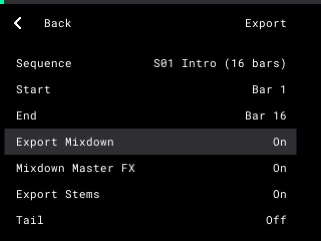
- プロジェクトを保存し、シーケンスを停止します。
- SHIFT + PAD 16 を押し、次に B3（Export）を押します。
- ENCODER で行を選択します。ENCODER を押すか K1 を回して、値を変更します。
- B3（Export）を押します。エクスポートは途中で止められません。
| 行 | 内容 |
|---|---|
| Sequence、Start、End | シーケンス（イベントのあるシーケンスのみ。例: S01 Intro (16 bars)）と小節。 |
| Export Mixdown | 全体のミックスの WAV を 1 つ。 |
| Mixdown Master FX | ミックスダウンにマスターエフェクト（Knob FX も含む）を含めます。ステムには含まれません。 |
| Export Stems | 各トラックの WAV を 1 つずつ、サブミックスエフェクト付きで書き出します。合わせると、マスターを除いたミックスと同じ音になります。シーケンス内でミュートされているトラックや、そこにノートがないトラックは、ファイルが作られません。 |
| Tail | リバーブやディレイのための、終わりの後の余分な時間。 |
| Folder | 保存先フォルダ（ENCODER を押します）。デフォルト: SD カード上の Samples/User/Export。 |
| Stems Folder | Subfolder: ステムは Stems フォルダに入ります。Same: ミックスダウンと同じ場所。 |
| BPM in Name | テンポをファイル名に入れない（Off）、ミックスダウンの名前に入れる（Mixdown）、またはすべての名前に入れる（Mix + Stems）。 |
| Separator | ファイル名の各部分の間に入れる 「 - 」 または 「_」。 |
ファイルは、プロジェクト名のフォルダに入ります。ファイル名はプロジェクト名で始まり、ステムにはトラック番号と名前も付きます。「MyTrack」、81 BPM の例:
BPM in Name Separator ミックスダウン ステム Off 「 - 」 MyTrack.wav MyTrack - Tr01 - Drums.wav Mix + Stems 「 - 」 MyTrack - 81 BPM.wav MyTrack - 81 BPM - Tr01 - Drums.wav Mix + Stems 「_」 MyTrack_81BPM.wav MyTrack_81BPM_Tr01_Drums.wav 一部の小節だけをエクスポートする場合、名前に小節も入ります（例: MyTrack - b2-5.wav）。
ファイルが既に存在する場合は、B2（Keep Both）または B3（Replace）を選択します。
空き容量がない場合、MPC は「Not enough space」と表示します。内部ストレージへのエクスポートは、空きが 200 MB を下回ると停止します。
カードがファイルを保存できない場合、エクスポートは EXPORT FAILED、ファイル、正常に書き出されたファイルの数を表示して停止します。B3（OK）を押します。コンピューターでカードを確認するか、別のカードを使ってください。
ヒント: プロジェクトのすべてのシーケンスは、同じファイル名になります。各シーケンスのエクスポートを残すには、Keep Both を選択するか、シーケンスのテンポが異なる場合は BPM in Name を設定してください。
#1 つのパッドのリサンプル
SampQOL OS は、大型の MPC の Flatten Pad のように、1 つのパッドだけをリサンプルすることもできます。
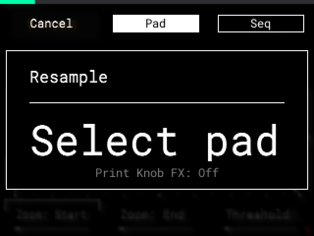
- リサンプルしたいパッドを選択します。
- SHIFT + PAD 11（Resample）を押します。
- B1 = Cancel。
- B2 = Pad: 選択したパッドのみ、1 回のヒット、テイル付き。
- B3 = Seq: シーケンス全体（標準）。
- Pad の場合、「Select pad」の下の行に、新しいサンプルに含まれるエフェクトが表示されます（例: Print Knob FX: On Pad FX: Off。On = エフェクトがオンで、そのプリントもオン）。SHIFT + B3（Knob FX）と SHIFT + B2（Pad FX）で、それぞれのプリントを On（白いボックス）または Off（白い枠）に設定します。MPC は前回の選択を記憶します。
- Pad の場合、K1 または ENCODER（1 ステップ = 1 秒）を回して Tail（0〜10 秒、デフォルト 2）を設定します。テイルが新しいサンプルに入るのは、エフェクト（パッドインサート、Knob FX、Pad FX）が含まれる場合のみです。MPC はこの値を記憶します。KNOB FX バーが表示されているときは、K1 は標準の Knob FX の機能になります。パッドのサンプルテイルは、そのフェードに必要な時間分、常に新しいサンプルに含まれます。
- 保存先のパッドを押します。
- 新しいサンプルに含まれるもの（その後、保存先のパッド上ではリセットされます）: チューン、フィルター、エンベロープ、LFO、ワープ、スタート／エンド／ループ、Offset、サンプルテイル、レイヤー、パッドインサート。保存先のパッドに残るもの: ルート、センド、ミュートターゲット、Mono/Poly、ミュートグループ、Amp Vel Sens。
- Print On: オンになっている Knob FX または Pad FX が、Tail とともに新しいサンプルに含まれます。Knob FX の場合、新しいサンプルにはソースパッドのボリュームが反映され、保存先のパッドは 0 dB のままです。両方が Off の場合、新しいサンプルにエフェクトは含まれず、保存先のパッドにソースパッドのボリュームが設定されます。
- チョップ: チョップしたサンプルの場合、新しいサンプルにも同じチョップが、音の中の同じ位置に付きます（Tune、Warp、Reverse によって、チョップも音とともに移動します）。Start と End の外にあるチョップは削除されます。保存先のパッドは Chop Type が Manual になります。UNDO で、チョップを含む古いサンプルが戻ります。古いサンプルの Extract パッドは変わりません。パッドが 1 つのチョップだけを再生している場合や、サンプルを持つレイヤーが複数ある場合は、チョップは付きません。
- トラックやサブミックスのエフェクト、およびその他のマスターエフェクトは、新しいサンプルに含まれません。Hidden の Knob FX または Pad FX は、プリントが On であれば含まれます。ほかの Hidden エフェクトは含まれません。そのような場合は、パッドインサートを使うか、RECALL（SHIFT + SAMPLE RECORD）を使います。RECALL は、すべてのマスターエフェクトを含めて、マスター出力の直近 25 秒を録音します。
ヒント: 新しいパッドも、オンになっている Knob FX と Pad FX を通って再生されます。プリントが On の場合、エフェクトが 2 回かかって聞こえます。リサンプルの後でエフェクトをオフにするか、プリントを Off にしてください。
ヒント: ピッチエンベロープ、ピッチ LFO、ランダムピッチは、音の途中で速度を変えます。そのため、チョップは平均速度で移動し、わずかに早くなったり遅くなったりすることがあります。チョップモードで確認してください。
ヒント: Pad FX を新しいサンプルに含めるには、SHIFT + PAD 11 の前に、Fixed または標準の Latch（パッドを押したまま B1 を押す）でオンにしてください。指で押さえているエフェクトは、Pad FX 画面を離れると止まります（標準）。フィードバックの多いリバーブやディレイには、2 秒を超える Tail が必要です。
#アンドゥとリドゥ
#アンドゥカウンター
SHIFT + -（Undo）と SHIFT + +（Redo）は、ステップの名前とカウンターを表示するポップアップを出します（例: Undo 2/7）。
- 最初の数字は、取り消したステップの数です。
- 2 番目の数字は、MPC が保持しているステップの数です。
例: Undo を 3 回押すと Undo 3/7 と表示されます。続けて Redo を 1 回押すと Redo 2/7 と表示されます。Redo 0/7 = すべてのステップがやり直された状態です。
- MPC が保持するステップは最大 512 個です。それを超えると、最も古いステップが削除されます。
- Load Project と New Project は、すべてのステップを削除します。
- 止めずに回し続けたノブの操作は、1 ステップです。0.5 秒を超えて止まると、新しいステップになります。
- Undo や Redo するステップがない場合、MPC はポップアップを表示しません。
- Undo と Redo は、SAMPLE RECORD でも動作します。
- Normalize、Trim、Extract、Resample は、それぞれの版を専用のサンプルファイルに保持するため、Undo が古いステップに必要なサンプルを削除することはありません。MPC は、MPC を起動したときやプロジェクトを読み込んだときに、古い版を削除します。
- どのパッドにも割り当てられていないサンプルは、保存されるプロジェクトに含まれません。標準と同様に、MPC は次の起動時にそれを削除します。
#ステップ名
SampQOL OS のステップのポップアップは、何が変わったか（1 行目）と、どこで変わったか（2 行目。14 文字より長い名前の場合）を表示します。例:
| ポップアップ | 意味 |
|---|---|
| Copy A01 / to T04 A02 +2 | パッド A01 を、トラック 4 の A02 とさらに 2 つのパッドにコピーした |
| Extract A01 / to T02 A01-A16 | A01 のチョップを、新しいトラック 2 に Extract した |
| Velocity / S01/T01 A05 | Step Edit: K3 でシーケンス 1、トラック 1 のパッド A05 を変更した（Nudge、Length も同様） |
| Erase S01/T01+2 | Step Edit（トラックビュー）: トラック 1 とさらに 2 つのトラック |
| Effect Off / Slot 1 A01 | Pad Mix: パッド A01 のスロット 1 のエフェクトがオフになった |
標準のステップは、標準の名前のままです（例: Add Event）。
#互換性と制限事項
SampQOL OS は、MPC Sample のファームウェア 1.3.0 でのみ動作します。テストされているのも、MPC Sample 1.3.0 のみです。MPC One、Live、X（MPC OS 3.9.1）上のプロジェクトは、まだテストされていません。
Mod は、MPC のプロジェクト形式が既に持っているもの（ノート、サンプル、ミュート、ドラムトラック、インサート）を書き込みます。それ以外のデータは、[ProjectData] フォルダ内の .sampqol ファイルに書き込まれます。このファイルは、標準および MPC One、Live、X では無視されます。プロジェクトをコピーするときは、[ProjectData] フォルダ全体をコピーしてください。
ヒント: SampQOL OS のプロジェクトは、別のフォルダに保存してください。標準の MPC Sample で開く前に、コピーを作成してください。
#別の MPC でのプロジェクト
| 機能 | MPC Sample、標準 1.3.0 | MPC One、Live、X（3.9.1） |
|---|---|---|
| To Seq、Looper、1 つのパッドのリサンプル、KEYS、Scale | 動作します: 通常のノートとサンプル。 | 動作します。 |
| より多くのドラムトラック | 最初のトラックのみ読み込まれます。ほかのトラックは、プロジェクトのセーフティネットが保持します。 | すべてのトラックが読み込まれます。 |
| Pad EQ | EQ は聞こえません。 | EQ は聞こえません。Pad EQ を Off にすると、そちらで聞こえるとおりにプロジェクトを聞けます。 |
| Stereo（片チャンネル） | パッドは両チャンネルを再生します。 | パッドは両チャンネルを再生します。 |
| Kill EQ インサート | PEQ 2-Band, 2-Shelf として再生されます（キルなし、+18 dB）。 | PEQ 2-Band, 2-Shelf として再生されます（キルなし、+18 dB）。 |
| AIR Compressor、AIR Stereo Width、Mother Ducker | SampQOL OS で設定した値で読み込まれ、再生されます。保存してもエフェクトは保持されます。 | おそらく再生されます: これらは標準の MPC エフェクトです。まだテストされていません。 |
| 録音したパッドミュート | ミュートは再生されません。 | ミュートはおそらく再生されます。 |
| シーケンスごとのトラックミュート | すべてのトラックが鳴ります。 | まだテストされていません。 |
| トラックとサブミックスのミュートグループ | ミュートは 1 つのトラックまたはサブミックスにのみ作用します。 | まだテストされていません。 |
| Mute Type が Event のパッドミュート | Audio として鳴ります: パッドの音はすぐに止まります。 | おそらく Audio として鳴ります。 |
| すべてのパッドに対する Knob FX | 標準と同じ: Submix 1 上のインサート。Mod で再び開くと、マスターに戻ります。 | マスターインサート 4 として再生されます。 |
| 削除または Hidden のマスターエフェクト | 標準では Pad FX、Flex Beat、Color Comp. が元に戻ります。Hidden のエフェクトは再生されません。 | Hidden のエフェクトは再生されません。 |
| Track Volume（FADER） | トラックボリュームは聞こえません。 | おそらくトラックボリュームとして再生されます。 |
| トラックの MIDI チャンネル | すべてのパッドが、MIDI Config の MIDI Out Channel と Pad MIDI Out で送信します。Off のトラックも同様です。16 Levels のパッドは元のノートを送信します。 | おそらくトラックのチャンネルで送信します。Pad MIDI Out が Never でも同様です。Off はおそらく何も送信しません。16 Levels のパッドは元のノートを送信します。 |
| ランダムなプロジェクト名、テンプレート | 通常のプロジェクト。 | 通常のプロジェクト。 |
| Settings、Knob FX List、Insert FX List、Sample Select のプレビュー | プロジェクトには含まれません。 | プロジェクトには含まれません。 |
MPC One、Live、X の列は、プロジェクト形式に基づくものです。まだテストされていません。
#制限事項
機能の使い方を変えるような制限事項は、その節のヒントにも記載されています。
- 1 つのパッド上のコード。 KEYS や Scale のコードは 1 つのパッド上にあります。標準の MPC では、Note On モードのパッド上のコードは、最も短いノートで止まります。ERASE、Mute、Solo は、そのパッドのすべての音に作用します。
- KEYS。 Step Edit では、キーを弾いてもイベントは追加されません（標準と同じ）。キーと、押し続けている 16 LEVELS パッドで同じノートを鳴らすと、離したときに互いを止めます（標準と同じ）。
- Knob FX。 すべてのパッドがこれを通って再生されます。すべてのパッドに対する Knob FXを参照。
- Automate。 Automate のヒントを参照。
- Stereo。 ほかの環境では、パッドは両チャンネルを再生します。ステレオを参照。
- Track Volume。 出力がそのトラックに設定されているパッドのみが対象です。FADER でのトラックボリュームを参照。
- トラックとサブミックスのミュートグループ。 標準の MPC はこれを認識しません。録音されたミュートは、録音されたとおりに各トラックで再生されます。
- MIDI アウト。 同じノート・同じチャンネルで 2 つのパッドを押し続けると、1 つのノートとして再生されます。MIDI 設定には Undo がありません。MIDI Port は全トラックで 1 つです。MIDI アウトを参照。
- シーケンスの切り替え。 MPC の再生中にシーケンスを切り替えると（Song モードでも）、短い途切れが聞こえることがあります。トラックやエフェクトが多いほど起こりやすくなります。
- 標準でのトラックミュート。 標準の MPC Sample は、シーケンスごとのトラックミュートを再生しません（Song Export の後も同様）。ミュートの録音を参照。
- Audio トラックミュートとパッド出力。 Out がサブミックスや出力に設定されているパッドは、（標準と同様に）クリックノイズとともにすぐに止まります。ミュートの録音を参照。
- Explode と Mute Targets。 Explode を参照。
- 内部ストレージ。 内部ストレージは、常に約 400 MB の空きを保ちます。編集や保存でそれ以上が必要になると、MPC は「Insufficient space on drive」と表示します。SD カードのサンプルは内部ストレージにコピーされます。Normalize は、ステップごとに次の起動まで保持される、より大きな 2 つ目のコピーを作ります。そのため、長いサンプルはすぐに内部ストレージを埋めます。標準でも、編集、新しいチョップ、チョップモードの終了の後、次の保存または読み込みまで、長いサンプルの古いコピーを保持します。SampQOL OS は、編集の後、また新しいチョップの場合はチョップモードの終了時に、それを削除します。トラブルシューティングを参照。
- 大きなプロジェクトのメモリ。 Load Project と Load Kit は、空きメモリ（RAM）に対して大きすぎるプロジェクトを読み込みません。大きなプロジェクトを読み込むたびに、次の起動まで一部のメモリが使用されたままになります。そのため、大きなプロジェクトは起動後には読み込めても、ほかのいくつかの読み込みの後には読み込めないことがあります。トラブルシューティングを参照。
#トラブルシューティング
#起動時にディスプレイに SAMPQOL のロゴが表示されない
- autorun フォルダは、カード直下になければなりません。
- カードは exFAT 形式でなければなりません。フォーマットすると、カード上のすべてのデータが削除されます。
- Mac: ディスクユーティリティ > カードを選択 > 消去 > ExFAT。
- Windows: エクスプローラー > カードを右クリック > フォーマット > exFAT > 開始。
- フォルダ内のファイルを変更したり開いたりしないでください。変更されたフォルダは、MPC に無視されます。zip ファイルから autorun フォルダをもう一度コピーしてください。
- ファームウェアは 1.3.0 でなければなりません（インストールの手順 1）。ほかのファームウェアでは、MPC は標準として起動します。
#ディスプレイに v1.3.0 が表示されない
ディスプレイに v1.3.0 と表示されるのは、正しいファームウェア 1.3.0.12 の場合のみです。
- 1.3.0 より低い場合: MPC Sample 1.3.0 Updater で 1.3.0 をインストールしてください。それより高いバージョンはインストールしないでください。
- 1.3.0 より高い場合: このファームウェアでは Mod を使用しないでください。
#SD カードを挿しても MPC が標準のまま
- MPC の電源をいったん切って、もう一度入れてください。
- それでも標準のままですか？ ファームウェアのバージョンを確認してください（インストールの手順 1）。
#起動が 0.0% で止まる
B1 を押してください。MPC は起動を続けます。
#MPC が起動時にフリーズする、または SampQOL OS が動作しない
MPC は起動時に確認をしないため、そこで標準を選択することはできません。次の手順を行ってください。
- MPC の電源が切れるまで、電源ボタンを押し続けます。
- カードを取り外します。MPC の電源を入れます。標準の状態に戻ります。
- もう一度 SampQOL OS を試すには、カードを元に戻します。SampQOL OS がすぐに起動します。問題が解消しない場合は、手順 1 と 2 をもう一度行い、その後手順 4 に進みます。
- コンピューターで、autorun フォルダの名前を変更するか移動します（標準に戻すを参照）。カード上のプロジェクトやサンプルは変更されません。
- カードを MPC に戻します。標準がすぐにカードを使用します。
logs フォルダ内の events.log と last-exit.log に、何が起きたかが記録されています。
#インストールは正しいのに SampQOL OS が動作しない
カードがすでに exFAT 形式の場合でも:
- カード上のプロジェクトとサンプルを、コンピューターにコピーします。フォーマットすると、カード上のすべてのデータが削除されます。
- カードを exFAT でもう一度フォーマットします（起動時にディスプレイに SAMPQOL のロゴが表示されないを参照）。
- インストールのすべての手順を、もう一度行います。各手順は、書かれているとおりに正確に行ってください。
#Insufficient space on drive（ドライブの空き容量不足）
このメッセージは SD カードではなく、内部ストレージに関するものです。内部ストレージは、常に約 400 MB の空きを保ちます。
- B1（Clear）を押して、Undo 履歴を削除します。これにより、Undo 履歴だけが使っていたサンプルの容量が戻ります。
- MPC の電源を切って、もう一度入れます。これで残りの容量が戻ります。
- プロジェクトとサンプルは、SD カードに保存してください。
- 内部ストレージは、できるだけ標準の状態に保ってください。自分のプロジェクトとサンプルは、内部ストレージから SD カードに移してください。
#Not enough memory（メモリ不足）
プロジェクトまたはキットが、空きメモリ（RAM）に対して大きすぎます。MPC は読み込みません。開いているプロジェクトはそのままです。
- B3（OK）を押します。
- プロジェクトを保存します。
- MPC の電源を切って、もう一度入れます。これですべてのメモリが戻ります。
- もう一度プロジェクトを読み込みます。
ヒント: この手順が必要になるのは、非常に大きなプロジェクトだけです（例: 16 トラックで、約 60 のフルシーケンス）。小さいプロジェクトはメモリの使用量も少なくなります。使っていないシーケンスは削除してください。
#演奏中に MPC が標準に戻る
Mod が 2 分以内に 2 回クラッシュしました。MPC の電源を切って入れ直すと、SampQOL OS が戻ります。カード上の autorun/logs にある events.log と last-exit.log に、何が起きたかが記録されています。
#コンピューターが SD カードを認識しなくなった
SD Card Access 中に SampQOL OS がクラッシュしました。ウォッチドッグは、MPC がカードを再び使う前にコンピューターからカードを切り離すため、両方が同時にカードを使うことはありません。
- SampQOL OS が再び起動するまで待ちます。
- SD Card Access（SHIFT + PAD 16）をもう一度開きます。
- コンピューターで、最後にコピーしたファイルを確認します。不完全な場合は、もう一度コピーしてください。
カード上の autorun/logs にある events.log ファイルに、「in SD Card Access: USB set back to normal」という行が記録されています。
#著作権と商標
SampQOL OS (c) 2026 Snare Bes. All rights reserved. LICENSE.txt を参照してください。
Akai Professional、MPC、MPC Sample は inMusic Brands, Inc. の商標です。
SampQOL OS © 2026 Snare Bes. All rights reserved. Akai Professional または inMusic の製品ではありません。